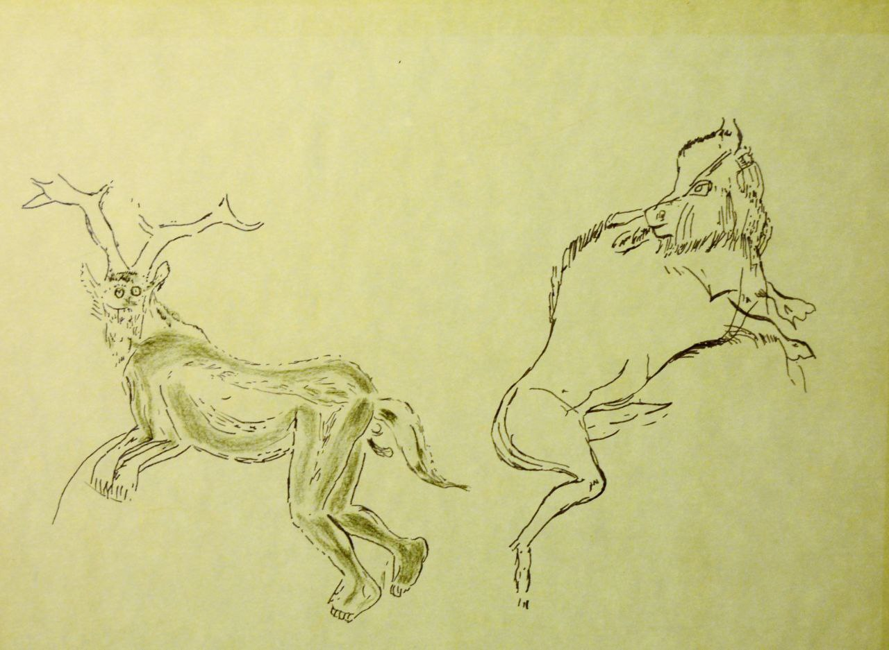
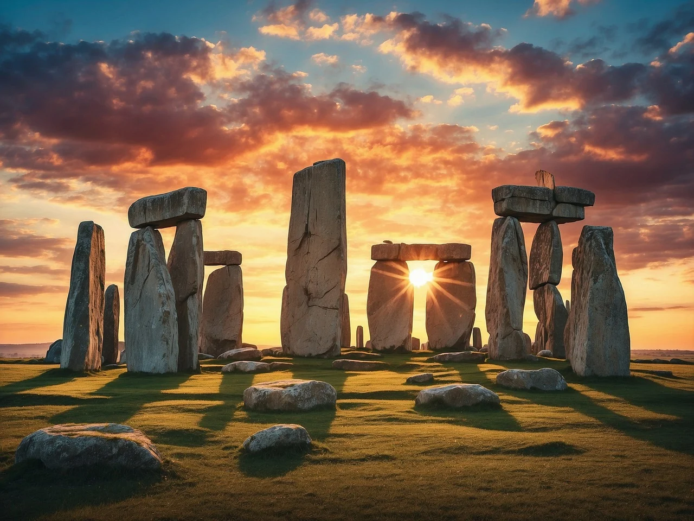

Geschichte der religiösen Ideen von Mircea Eliade
Das Lebenswerk von Eliade.
Vorwort
Die Erkenntnis einer wirklichen und sinnvollen Welt ist aufs innigste mit der Entdeckung des Heiligen verbunden. Denn durch die Erfahrung des Heiligen hat der menschliche Geist den Unterschied zwischen dem erkannt, was sich als wirklich, mächtig, bedeutsam und sinnvoll enthüllt, und dessen Gegenteil – dem chaotischen und gefahrvollen Fluss der Dinge, ihrem zufälligen und sinnlosen Aufgang und Untergang.
Das "Heilige" ist also ein Element der Struktur des Bewusstseins und nicht ein Stadium in der Geschichte dieses Bewusstseins. Als ein menschliches Wesen zu leben war in den ältesten Kulturen schon an sich ein religiöser Akt, denn Nahrung, Sexualität und Arbeit hatten eine sakramentale Bedeutung. Mit anderen Worten, Mensch sein oder, besser: werden heißt "religiös" sein.
Das Alter einer religiösen Vorstellung darf nicht verwechselt werden mit dem Datum des ersten Dokuments, das sie bezeugt.
Allgemeinbildung ist wichtig, wenn man spezialisiert forscht. Denn jede historische Untersuchung verlangt eine gewisse Vertrautheit mit der Universalgeschichte; deshalb befreit auch die rigoroseste „Spezialisierung“ den Wissenschaftler nicht von der Verpflichtung, seine Forschungen in die Perspektive der Universalgeschichte zu stellen.
Bewusstsein der Einheit der Geistesgeschichte der Menschheit. Heute das letzte Stadium der Entsakralisierung. Dieser Vorgang ist für den Religionswissenschaftler von größtem Interesse, denn er veranschaulicht die völlige Verschleierung des „Heiligen“, genauer, seine Identifikation mit dem „Profanen“.
Erstes Kapitel: Am Anfang... Magisch-religiöse Verhaltensweisen des Altsteinzeitmenschen - Paläolithikum (2,5 Mio - 10k v.Chr.)
1. Orientierungsfähigkeit: Werkzeuge zur Anfertigung von Werkzeugen - Die Bändigung des Feuers
Der Mensch vermag nicht lange in der, durch Orientierungslosigkeit bewirkten Ungewissheit zu leben. Diese Erfahrung des um einen „Mittelpunkt“ orientierten Raumes erklärt die Bedeutung der Gliederungen und exemplarischen Unterteilungen von Territorien, Siedlungen und Wohnstätten, wie auch ihren kosmologischen Symbolismus
Im Unterschied zum Primat baut der Mensch Werkzeuge, um Werkzeuge zu bauen. Er verwahrt diese für spätere Wiedernutzung. Sie sind keine Verlängerung des Körpers, sondern ermöglichen neue Funktionen, z.B. schneiden.
Technischer Fortschritt ist nicht mit Fortschritt der Intelligenz gleichzusetzen, sehen dies auch in den letzten zwei Jahrhunderten. Man kann davon ausgehen, dass der Mensch seit 200 Tausend Jahren aufgrund seiner Genetik die gleiche Intelligenz aufweist, wie heute.
"Jede Neuerung birgt die Gefahr des Todes aller" - Jede neue Erfindung, jede neue Strategie, usw. hat das Potential, dass die Familie / der Stamm ausstirbt.
Ältestes Zeugnis von Feuer ist 600k Jahre alt.
Der Mensch ist das Endprodukt einer Entscheidung, die am Anfang der Zeiten getroffen wurde: die Entscheidung, zu töten, um leben zu können.
Jagd führt zur Arbeitsteilung und zu einem Bezugssystem eigener Art zw Jäger und getötetem Tier. Mystische Solidarität zw Jäger und Opfer. Das vergossene Blut gleicht dem eigenen. Gegenstand des Opfers wird austauschbar.
So wie Freud in den Schöpfungen des Unbewussten – Träume, Tagträume, Phantasmen, usw. – eine Sprache freilegte, so bleibt die Hoffnung auch die altsteinzeitlichen Dokumente zu entschlüsseln, wie auch die Religion dieser Zeit.
2. Die "Undurchsichtigkeit" vorgeschichtlicher Dokumente
Beherrschung der Distanz durch Wurfwaffen. Man sieht die Heiligung solcher Werkzeuge auch bei den auf der Stufe von Jagd und Fischerei stehengebliebenen. Auch zeitgenössische Dokumente sind geistig undurchsichtig ohne die Einfügung in ein Bedeutungssystem zu entziffern.
Die primitiven Jäger betrachten das Tier als ein dem Mensch ähnliches, aber mit übernatürlichen Kräften begabtes Wesen. Sie glauben an die Möglichkeit der Verwandlung der Menschen in ein Tier und vice versa, wie auch eine Simultanexistenz. Schutzgeister, Herr des Wildes, Buschgeistern, usw.
Das Töten des Tieres folgt einem Ritual. Überwacht von einem Wildgeist, der darauf achtet, dass der Jäger nicht mehr tötet, als zum Lebensunterhalt nötig ist. Meistens wird ein Teil geopftert. Knochen, Schädel, Blut kommt besondere Bedeutung zu.
3. Symbolische Bedeutung der Bestattungen
Bestattungen zeugen von einem Glauben an ein Leben nach dem Tod. Diese gehen zumindest 70k-50k Jahre zurück, womöglich sind die ältesten Funde sogar 400k-300k.
Der Brauch die Toten mit Ocker, Blutersatz, geht dabei weit zurück und ist weltweit verbreitet. Teils sind die Leichen in Fötusposition. Ein beeindruckendes Beispiel ist die Bestattung von Teshik-Tash: ein Kind inmitten eines Kranzes von Steinbockhörnern.
Im Jungpaläolithikum scheint die Bestattung allgemein üblich zu werden. Teils gibt es auch Grabbeigaben, diese deuten auf einen Glauben an die Weiterführung einer bestimmten Tätigkeit nach dem Tod hin.
Einige Tote sind nach Osten ausgerichtet. Die Sonne und die Seele werden verbunden, die Hoffnung einer Wiedergeburt. Die dazugehörigen Riten bleiben uns aber undurchsichtig. So wird zb bei den Kogi heutzutage eine Muschel beigelegt, wenn eine Frau einen Mann hat, wird diese nicht beigefügt so wird die Frau einen Mann fordern, was den Tod eines Jünglings im Dorf bewirken würde.
4. Die Kontroverse über die Knochendepots
Aus der ersten Zwischeneiszeit wurden in einige Höhlen der Alpen Schädel- und Langknochen von Bären gefunden. Diese sind von Ost nach West gerichtet. Die Vermutung liegt nahe, das dies Jäger und Wild Riten sind, wo einer Gottheit geopfert wurde oder die eine Beziehung zw Jäger und Wild ausdrücken, z.B. Reinkarnation des Tieres.
Der Ritus knochen von getöteten Tieren nicht zu brechen, da diese wieder mit Fleisch angezogen werden, findet sich in vielen Kulturen. So leben einige archaische religiöse Vorstellungen in späteren Epochen noch weiter, so auch in der Bibel Ezechiel 37,1ff.
5. Die Wandmalereien: Bilder oder Symbole?
Höhlenmalereien aus der paläolithischen Kunst begrenzen sich auf ein sehr begrenztes Gebiet in Europa (FR, ES, IT) und im Ural. Dabei ist eine außergewöhnliche Einheit des künstlerischen Gehalts. Bedeutung der Bilder verändert sich zw 30k und 9k nicht.
Die Höhlen sind klar nicht zum Wohnen geeignet und deuten auf eine Form der Nutzung als Heiligtümer, die Malereien sind weit weg von den Eingängen, mehrere hundert Meter. Bei einer der Höhlen muss man mittels Strickleiter 6m einen Schacht hinunter (Lascaux).
Deutung als Jagdmagie, Reaktualisierung, Auszug zur Jagd, Initiationsriten sinds alles mögliche und plausible Deutungen.

Der große Zauberer, Herr der Tiere
7. Riten, Denkweise und Vorstellungswelt der Altsteinzeitjäger
Altsteinzeitliche Kunst weist eine Symbolik von klar komplementären maskulin und feminin auf – sexuell und kosmologische Prinzipien. Wahrscheinlicher Bezug darauf, um sowohl die Welt zu organisieren als auch das Geheimnis ihrer Schöpfung und ihrer periodischen Erneuerung zu erklären.
Psychisch-geistige Aktivität erweist sich als komplex und alt. Bereits im Jungpaläolithikum (50-12k v.Chr.) findet man viele Hinweise auf Mondkalender, die Feste bestimmen durften. Dieses System hält sich über 25000 Jahre. Auf diese Symbolik gehen wahrscheinlich Schrift, Arithmetik und Kalender zurück. Somit geht die Analyse des Mondzyklus über 15k Jahre vor die Entdeckung des Ackerbaus zurück.
Primitve sind oftmals lebende Fossilien, die Aufschlüsse über die Glaubenswelt der Altsteinzeit geben können. So zb der Rundtanz der Jäger und Wild verbindet oder Initiationsriten für Knaben.
Es ist sehr wahrscheinlich, dass die paläolithischen Völker bereits eine Anzahl von Mythen kannten. Kosmologische und Ursprungs-Mythen. Die Urwasser und der Schöpfer, der in Gestalt des Menschen oder eines Wassertieres auf den Grund des Ozean hinabsteigt, um die für die Erschaffung der Welt notwendige Materie zu holen. So sind auch Mythen, Legenden und Riten im Zusammenhang mit Himmelfahrt und magischem Flug (Federn von Raubvögeln) auf allen Kontinenten bezeugt. Diese sind für den Schamanismus spezifisch.
Weiters auch der Regenbogen als Brücke zur anderen Welt. Kosmische Berge, Weltennabel, paradigmatische Flüsse, die die Welt in vier Richtungen unterteilen, dazu wurden Zeugnisse gefunden.
Mythen zum Ursprung des Feuers. Die Mehrzahl dieser stellt denn Geschlechtsakt in den Vordergrund.
Grunderfahrung der Sakralität des Himmels. Darin offenbart sich Transzendenz und Herrlichkeit ungebrochen. Daher auch ekstatische Aufstiege der Schamanen, Flugsymbolik, imaginäre Erfahrungen der Höhe, Befreiung vom Schwergewicht, Wohnstätte der Götter, Geister und Helden.
Offenbarung der Finsternis, der Nacht, des Tötens der Beute und des Sterbens von Familie, kosmologische Katastrophen, Wahn, mörderische Blutgier.
Magisch-religiöse Bewertung der Sprache. Gesten, Laute, Wörter. Schon vor der Entwicklung der artikulierten Sprache war die menschliche Stimme fähig, Informationen, Befehle oder Wünsche mitzuteilen oder eben auch durch klangliche Neuerungen eine ganze Welt von Vorstellungen zu erwecken (Wir sehen dieses Ereignis bei der Entwicklung jedes Kindes).
Mit zunehmender Vervollkommnung der Sprache vermehrte sie ihre Möglichkeiten. Das gesprochene Wort bewirkte eine Kraft, die wenn überhaupt, nur schwer auszulöschen war. Magische Formeln der Lobrede, der Satire, der Verwünschung und Verfluchung halten sich bis heute.
Abschließender Hinweis auf die unterschiedlichen Persönlichkeitstypen. Ein Jäger möchte sich durch Heldentat und List hervortun, andere durch Intensität der ekstatischen Trancezustände. Bereits im Paläolithikum gibt es ein reiches komplexes Erbe an Religiösität.
Zweites Kapitel: Die längste Revolution: Die Entdeckung des Ackerbaus - Mesolithikum (20k-5k) und Neolithikum (10k-4,5k)
8. Ein verlorenes Paradies
Mit dem Ende der Eiszeit gegen 8000 tritt in Europa eine radikale Veränderung der Flora und Fauna ein. Rentierherden wandern nach Norden ab. Der Mensch wandert mit und lässt sich auch an Küsten und Seen nieder, um zu fischen. Insbesondere in Palästina eine Achsenzeit: erstmalige Zähmung von Tieren und der Anfang des Ackerbaus.
Es gibt wenige Funde aus dieser Zeit von den Jägern, lediglich ein paar Rentierknochenfunde im Schlamm gemeinsam mit Werkzeugen. Der See von Stellmoor galt wahrscheinlich als heiliger Ort.
In der Quelle von Saint-Sauveur wurden Feuersteine aus dem Neolithikum gefunden, Gegenstände aus der Zeit der Gallier und der Galloromanen, sowie aus dem Mittelalter. Man sieht die Kontinuität heiliger Orte trotz kulturellen Einflusses der Römer, wie auch Verbote der Kirchen.
Im Vergleich zur Kargheit der Zeugnisse der Rentierjäger, bietet die Felsenkunst Spaniens reiches Material. Strenge formalistische, geometrische Kunst ist dort zu finden. Die Felswände der Sierra Morena sind mit Menschenbildern und Tierfiguren – vor allem Hirschen und Steinböcken – bedeckt, die auf nur wenige Linien reduziert sind und verschieden Zeichen tragen – Wellenbänder, Kreise, Punkte, Sonnen. Stehen im Zusammenhang mit den Kieseln in Azilien. Diese können als phallische Symbole, Schriftelemente, magische Zeichen gedeutet werden.
Mögliche analoge Funktion: Bei den australischen Tschuringas werden ähnliche geometrische Muster auf Steinen in Höhlen versteckt oder vergraben. Am Ende der Initiaton werden diese mit den folgenden Worten gezeigt: "Dies ist dein Leib, aus dem du durch eine neue Geburt hervorgegangen bist" oder "Das ist dein Leib. Das ist der Ahne, der du einst warst, als du während deines früheren Lebens wandertest. Dann stiegst du in die heilige Höhle hinab, um dort auszuruhen."
Ursprungsmythologie Teil aller heutiger Religion, mit Ausnahme des Hinayana-Buddhismus. Archaische religiöse Ideen können sich in bestimmten Epochen und infolge bestimmter besonderer Umstände ganz unerwartet ändern.
Falls Ahnenkult das europäische Mesolithikum beherrschte, dann ist es wahrscheinlich, das die Bedeutung des religiösen Komplexes aus der Erinnerung an die Eiszeit erklärbar ist, in der die Ahnen in einer Art Jägerparadies lebten. Ein goldenes Zeitalter, wo es Wild im Überfluss gab und Gut und Böse unbekannt waren – so lautet der Ahnenmythos der Australier.
9. Arbeit, Technologie und imaginäre Welten
Vor allem im Vorderen Orient ist das Mesolithikum eine schöpferische Periode. Auch hier Übergangscharakter von Jäger-/Sammlerkultur zu Getreideanbau.
Werden sesshaft. Natuf entdecken ernährungstechnische Bedeutung wilder Getreidearten. Mithilfe von Steinsicheln geernetet mit Stampfer in Mörser verkleinert.
Zähmung der Tiere. Hammel um 8000, Bock un 7000 in Jericho, Schwein um 6500, Hund um 7500 in England.
Folgen des Anbaus von Gräsern: Wachstum der Bevölkerung und Entwicklung von Handel.
Kunst der Natuf ist im Gegensatz zum geometrischen Schematismus von Europa naturalistisch. Kleine Tierskulpturen und Menschenfigurinen, in erotischer Haltung.
Bestattungen des Körpers in Hockenstellung und Bestattung des Schädels. Kopf/Hirn gilt als Sitz der Seele. Schon lange hatte man durch Träume und ekstatische Zustände dir Existenz eines vom Leib unabhängigen Elements erkannt. Dieses war im ganzen Körper gegenwärtig. Lokalisierung war folgenschwer, Kopf wird zum Kultobjekt. Durch Verzehr des Hirnes nimmt man das geistige Element der Beute in sich auf.
Bogen, Herstellung von Schnüren, Netzen und Angelhaken, Boote für lange Fahrten werden im Mesolithikum entwickelt. Töpferei im Neolithikum. Viele Mythologien und Rituale um diese Gegenstände. Bedeutung der Vorstellungskraft, die durch die Vertrautheit mit den verschiedenen Modalitäten der Materie erweckt wurden. Das Mikro-Universum, dass durch die stundenlange Aufmerksamkeit des Handwerkers, wird zu einem geheimnisvollen, geheiligten, bedeutungsreichen Mittelpunkt, der die Fantasie anregt.
Vorstellungskraft hat damals eine mythologische Dimension. Eine beachtliche Zahl von übernatürlichen Gestalten und mythologischen Episoden von späteren religiösen Traditionen, sind sehr wahrscheinlich Entdeckungen der Steinzeit.
10. Das Erbe der Steinzeitjäger
Die Fortschritte lösen eine kulturelle Vielfalt aus. Die Überreste der paläolithischen Jägergesellschaften dringen in Randzonen vor: Wüste, große Wälder, Gebirge, ...
Allerdings führt dies nicht zum Verschwinden von für Jägerkulturen typische Verhaltensweisen und deren Spiritualität. Jagd besteht weiterhin in Ackerbaugesellschaften: zum Lebensunterhalt und zur Verteidigung von wilden Tieren, wie auch Plünderer.
Krieger, Eroberer und Militäraristokraten setzen den Symbolismus und die Ideologie des Jägervorbilds fort.
Die von Bauern und Hirten vollzogenen Blutopfer sind auch eine Wiederholung der Tötung des Wildes durch den Jäger.
Mehrere tausend Jahre nach dem Sieg der bäuerlichen Wirtschaftsform macht sich die Weltanschauung des primitven Jägers wieder breit. Indoeuropäische Männerbünde und die Turk-Mongolen (Nomadenreiter Mittelasiens) verhielten sich wie Raubtiere, die die Pflanzenfresser der Steppe bzw. das Vieh der Bauern jagen, töten und fressen. Sie trugen Raubtiernamen, vor allem den des Wolfes, und hielten sich für Abkömmlinge eines mythischen Tierahnen. Initiationsritus ist die Verwandlung in einen Wolf/ein Raubtier.
Verfolgung und Tötung des Tieres wird zum mythischen Modell für Landeroberung und Staatsgründung. Jagd- und Kriegstechniken sind zum Verwechseln ähnlich.
Bis Heute gilt die Jagd als Erziehung schlechthin und ist der Lieblingssport der Herrscher.
Die Hunderttausende von Jahren, in denen der Mensch in einer Art mystischer Symbiose mit der Tierwelt lebte, haben unauslöschbare Spuren hinterlassen.
11. Die Veredelung von Nahrungspflanzen: Ursprungsmythen
9000 bis 7000 setzen die ersten Dörfer auf Ackerbau. Die Zähmung von Tieren und die Kultivierung von Gräsern geht der Herstellung von Töpferwaren voraus.
Ackerbau im eig Sinne, also Getreideanbau entwickelt sich zunächst in den tropisch feuchten Ebenen Mittelamerikas und Südwestasiens.
Der Mensch wird zum Produzenten seiner Nahrung und muss das Verhalten seiner Ahnen überarbeiten. Die im Paläolithikum entstandenen Techniken der Zeitberechnung (Mondkalender) reichen nicht mehr aus. Der Pflanzer musste seine Pläne einige Monate vor ihrer Durchführung ausarbeiten. In genauer Reihenfolge musste eine Anzahl komplexer Tätigkeiten durchgeführt werden, die alle auf ein fernes und nie sicheres Ergebnis ausgerichtet waren: die Ernte. Außerdem erforderte der Pflanzenanbau eine andere Arbeitsteilung, fortan lag die Hauptverantwortung für die Sicherung des Lebensunterhalts bei den Frauen.
Dies stößt auch eine religiöse Revolution an. Die meisten Ursprungs-Mythen finden sich bei Naturvölkern, die Hackbau und Getreideanbau betreiben. Knollen und fruchttragende Bäume entstanden aus einer geopferten Gottheit.
Ein gewaltsamer Tod wird schöpferisch. Aus dem Leib, den Exkrementen, etc. der toten Gottheit wachsen bislang unbekannte Pflanzen. Durch diesen Tod kann die Gottheit auch im Leben der Irdischen und selbst deren Tod ständig gegenwärtig sein. Mit der Nahrung der aus dem Leib hervorgegangenen Pflanzen nimmt der Mensch die Substanz der Gottheit in sich auf. Die Nutzpflanzen sind heilig, weil sie aus dem Leib einer Gottheit stammen, der Mensch isst somit göttliche Wirklichkeit.
Die Nutzpflanze ist in der Welt nicht – wie das Tier – vorgegeben, sondern das Ergebnis eines dramatischen Urereignisses: das Ergebnis eines Mordes. Speisetheologie.
Weiters findet sich die Gabe des Getreides an die Menschen durch eine Hierogamie zwischen Himmelsgott und Erdmutter bzw durch mythische Dramen, welche Sex, Tod und Auferstehung beinhalten.
Es ist kennzeichnend, dass der Pflanzer seine absolut friedliche Arbeit, die ihm seine Existenz sichert, mit einem Mord in Verbindung bringt (Rituale, Tier- und Menschenopfer, Kannibalismus, Pubertäts- und Bestattungszeremonien sind Memoria), während in Jägergesellschaften die Verantwortung für das Blutvergießen einem Anderen zugeschrieben werden. Der Jäger fürchtet die Rache des Tieres oder aber rechtfertigt sich vor dem Herrn der Tiere. Der ursprüngliche Kontext des Urmordes des Pflanzers ist hingegen nicht leicht festzustellen.
12. Frau und Vegetation: Sakraler Raum und periodische Welterneuerung
Es entsteht eine mystische Solidarität zw Mensch und Vegetation. Bis zum Ackerbau das Wesen und die Sakralität des Lebens in Knochen und Blut, nun in Samen und Blut.
Es rücken die Frau und die weibliche Sakralität in den ersten Rang. Da Frauen eine entscheidende Rolle bei der Züchtung von Pflanzen gespielt haben und die bebauten Felder über haben, erhöht sich ihre soziale Stellung. Matrilokation: Verpflichtung des Mannes im Hause seiner Frau zu wohnen.
Parallele weibliche Fruchtbarkeit und Fruchtbarkeit der Erde. Sie kennen das Geheimnis der Schöpfung. Ursprung des Lebens, Nahrung und Tod.
Nach Entdeckung des Pflugs: Vergleich mit Geschlechtsakt.
Mutter Erde. Sogar noch im Olymp vorhanden: Hera wird ohne Mann schwanger.
Geburt des Menschen aus (Mutter) Erde. Kehrt nach dem Tod wieder zurück.
Frau und Geschlechtlichkeit werden mit den Mondphasen, der Erde und dem Vegetations-Mysterium in Verbindung gebracht. Dieses erfordert den Tod des Samen, um neue Geburt zu ermöglichen, und so auch Vervielfältigung.
Die religiöse Kreativität wurde nicht durch das empirische Phänomen des Ackerbaus geweckt, sondern durch das Geheimnis von Geburt, Tod und Wiedergeburt, das mit dem Vegetationskreislauf gleichgesetzt wird. Zirkulare Zeit, kosmischer Zyklus, unendliche Wiederholung
Mythisches Thema von sterbenden und wiederauferstehenden Göttern gehört zu den bedeutendsten überhaupt.
Ackerbaukulturen entwickeln eine kosmische Religion. Zentrales Geheimnis der periodischen Erneuerung der Welt. Der Weltenbaum: Ausdruck des Universums im pflanzlicher Metapher. Er verbindet die drei kosmischen Regionen: Wurzeln Unterwelt, Wipfel Himmel.
Absolute Wirklichkeit, Verjüngung und Unsterblichkeit sind Helden/Privilegierten in Form einer Frucht oder einer an einem Baum entspringenden Quelle erreichbar.
Mythisch-rituelles Neujahrsschauspiel schon bei den Steinzeitpflanzern. Schließt Tote mit ein. Analoge Zeremonien im klassischen Griechenland, bei den Germanen, in Japan, usw.
Religiöse Wertung des Raumes wird durch Sesshaftigkeit bedeutender. Wahre Welt ist, wo man lebt. Mittelpunkt der Welt ist geheiligte Stätte, wo Rituale und Gebete stattfinden. Himmel als Zelt, gestützt von Weltenpfeiler, Rauchloch ist das Himmelspforte.
Rituelle Kämpfe, insbesondere bei Neujahrsfesten: Himmel und Erde, Sommer und Winter, männlich und weiblich, feindliche Gruppen. Diese Kämpfe erwecken, stimulieren oder vermehren die schöpferischen Kräfte des Lebens.
Agrarisch strukturierte Religiosität führt, ungeachtet zahlloser Variationen und Neuerungen, zur Herausbildung einer gewissen Grundübereinstimmung, die noch heute weit voneinander bäuerlicher Gesellschaften, wie jene der Mittelmeerländer, Indiens und Chinas verbindet.
13. Neolithische Religionen des Vorderen Orients
Vom Neolithikum bis zur Eisenzeit vermischen sich religiöse Ideen und Kulturgeschichte. Jede technische, wirtschaftliche und soziale Neuerung scheint mit religiöser Bedeutung gekoppelt. Religiöses Echo von Innovationen.
Naher Osten
Jericho whsl älteste Stadt der Welt (6850, 6770). Tempel, Hauskapellen, Fruchtbarkeitsfiguren. Präparierte Schädel mit Gips und Muscheln, Tote begraben unter dem Fußboden.
Fruchtbarkeitskult und Totenkult scheinen zusammenzugehören.
Hacilar: 6200 ein Heiligtum mit Wand, wo Geier mit Menschenbeinen enthauptete Menschen angreifen. Mythisch-ritueller Komplex, dessen Bedeutung uns nicht zugänglich ist. Stier, Frau (mit Leopard) wird abgebildet. Gegen Ende der Hacilarkultur herrliche, reich mit geometrischen Mustern verzierte Keramik.
Wird abgelöst von Tell-Halaf Kultur. Sie kennt das Kupfer. Der wilde Stier als Epiphanie für die männliche Fruchtbarkeit. Keine männlichen Gottheiten abgebildet, nur Urbild der Muttergöttin in Begleitung von Tauben, mit übergroßen Brüsten, häufig sitzend. Kultur verschwindet 4400.
Von aus Südirak stammende Obedkultur ersetzt in ganz Mesopotamien. Beachtliche Fortschritte in Metallurgie. Kupferbeile, Gegenstände aus Gold. Reichtum durch Fortschritte in Ackerbau und Handel. Lebensgroßer Menschenkopf und Tierköpfe aus Marmor haben zweifellos rel. Bedeutung. Menschengestalten in Kunst sind stark schematisiert. Auf Amuletten abgebildete Heiligtümer sind Prototyp des Tempels nicht Abbild. Monumentale Tempelgebäude: weißer Tempel (3100), bildet ein Zikkurat, heiliger Berg.
14. Die geistig-religiöse Welt des Neolithikums
Aus den Mittelmeerländern verbreitet sich der Ackerbau über Griechenland, den Balkan und die Donauländer, nach Indien, China und Südostasien. Teils schneller, teils langsamer. Durch die Erfolge der europäischen Kolonisation und der industriellen Revolution dringt die Nahrungspflanzenkultur schlussendlich bis nach Australien und Patagonien.
Gleichzeitig werden auch die für Getreideanbau speziellen Mythen und Riten weitergegeben, allerdings unterscheiden sich diese teils dann auch wieder erheblich.
Um 7000 tritt in Griechenland, Italiens, Kreta, Südanatolien, Syrien und Palästina eine Kultur auf, die Korn- und Gerstenanbau kennt. Diese Kultur tritt ohne erkennbare Herkunft auf und unterscheidet sich vom vorderen Orient und jenen Mittel- und Nordeuropas.
Zwischen 6500 und 5300 findet auf der Balkanhalbinsel und in Zentralanatolien ein gewaltiger kultureller Aufschwung statt. Zahlreiche Gegenstände, Städte mit Mauern, Altäre und Heiligtümer. Neolithische Fundstätte in Cascioarele. Tempel mit roten und grünen Spiralen. 2m hohe Säule verweist auf acis munid. Die Säule ist hohl und verbindet sich so mit dem kosmischen Baum. Die genauen Bedeutungen sind uns nicht zugänglich.
Erst mit den aus späteren Zeiten gefunden Texten erschließt sich uns die Vielschichtigkeit und Tiefe lang durchdachter, neuinterpretierter und bisweilen schon wieder verdunkelter, fast unverständlicher Bedeutungen der damaligen religiösen Praktiken.
Die semantischen Möglichkeiten der Funde sind stark begrenzt und die später gefundenen Texte sind stark geprägt aus der Weltsicht von Metallurgie, Stadtkultur, Königtums und organisierter Priesterschaft.
Allerdings werden doch einzelne Dinge klar. Die Kontinuität heiliger Orte und bestimmter Acker- und Bestattungsrituale. Selbst im 20. Jhd gibt es noch diverse Getreidebeigaben bei Bestattungsritualen in Ägypten, Rumänien, dem Balkan (coliva - griechisch kollyva). Diese Riten haben mind. 4000-5000 Jahre überlebt, selbst unter den strengen monotheistischen Religionen des Christentums und des Islams.
15. Der religiöse Kontext der Metallverarbeitung: Mythologien der Eisenzeit
Auf die Mythologie des Steinschliffs folgt die der Metalle. Bekanntlich bearbeiteten Naturvölker, wie auch vorgeschichtliche Völker das meteoritische Eisen. Sie behandelten diese wie Steinwerkzeuge. Als Cortez die aztekischen Häuptlinge fragte, woher sie ihre Messer hätten, deuteten sie zum Himmel. Dies ist durch Grabungen bestätigt.
Die altorientalischen Völker hatten wohl ähnliche Vorstellungen. Das sumerische Wort An.Bar, das älteste bekannte für Eisen, besteht aus den Zeichen für Himmel und Feuer.
Das meteoritische Eisen war aber selten und so kostbar wie Gold und wurde vor allem rituell verwendet. Das Schmelzverfahren für Eisen musste erst entdeckt werden, ehe ein neuer Abschnitt in der Geschichte der Menschheit beginnen konnte.
Im Gegensatz zu Kupfer und Bronze wurde die Metallurgie des Eisens sehr früh industriell betrieben. Als das Geheimnis entdeckt war, war es sehr einfach große Mengen von Metall zu beschaffen, denn die Lager waren sehr reich und leicht abzubauen. Erst nach Erfindung der Öfen, und vor allem, nachdem die Härtung des zur Weißglut erhitzten Metalls gelungen war, erhielt das Eisen seine überragende Bedeutung.
Dies hatte wichtige religiöse Folgen. Man sieht sich nun nicht nur der Sakralität des Himmels gegenüber, sondern auch der tellurischen Sakralität. Die Erze wachsen im Schoß der Erde. Die Gebärmutter der Erdmutter. Die Erze sind gewissermaßen Embryonen, sie wachsen langsamer als das pflanzliche Leben, haben einen eigenen zeitlichen Rhythmus. Sie reifen in der tellurischen Finsternis. Die Entnahme ist ein vorzeitiger Eingriff. Hätten sie sich weiterentwickelen können, so wären sie zu vollkommenen Metallen geworden.
In der ganzen Welt praktizieren die Bergleute Riten, die Reinheit, Fasten, Meditation, Gebete und kultische Handlungen umfassen. Die Riten sind durch die Art des in Aussicht genommenen Unternehmens bestimmt. Man will sich Zugang zu einer sakralen, unantastbaren Zone verschaffen, die tief und gefährlich ist. Man dringt in die geologischen Schichten des Lebens ein. Die Mythologien sind voll mit Epiphanien, wie Feen, Schutzgeister, Elfen und Gnomen.
Der Handwerker nimmt den Platz der Erdmutter ein, um das Wachstum mithilfe des Feuers zu beschleunigen. Daher die endlose Zahl von Vorsichtsmaßnahmen, Tabus und Ritualen, die das Schmelzen begleiten. Einige afrikanische Völker, wie auch der erste Metallgießer Chinas Yu, der Große, unterscheiden männliche und weibliche Metalle.
Der Metallarbeiter, ebenso wie vor ihm der Töpfer und neben ohm der Schaman, Medizinmann und Zauberer, ist der Meister des Feuers. Das Feuer dient ihm zur Schaffung einer anderen Wirklichkeit, einer schnelleren Reife. Das Metall ist doppeldeutig, hat heilige und zugleich dämonische Kräfte. So sind auch die Metallarbeiter hochgeachtet, aber auch gefürchtet. Mancherorts werden sie sogar gemieden und verachtet.
In zahlreichen Mythen fertigen die göttlichen Schmiede die Waffen der Götter und sichern damit den Sieg. Im kanaanäischen Mythis schmiedet Koschar-wa-Chasis für Baal die beiden Keulen, mit denen er Jam, den Herrn der Meere und unterirdischen Gewässer, besiegt. In der ägyptischen Version schmiedet Ptah (der Töpfergott) die Waffen mit denen Horus den Seth besiegt. In gleicher Weise der göttliche Schmied Tvastr die Waffen Indras, als dieser mit Vrta kämpft. Hephaistos schmiedet den Blitz, mit dem Zeus über Typhon siegt. Neben diesen Mitwirken im Kampf ist der Schmied auch Baumeister und Handwerker der Götter, baut Tempel und Paläste und schmückt die Heiligtümer. Außerdem hat er mit Musik und Gesang zu tun. Auch in zahlreichen Völkern sind die Eisen- und Kupferschmiede zugleich Musiker, Dichter, Quacksalber und Magier. Auf verschiedenen kulturellen Ebenen (ein Zeichen hohen Alters) scheint also ein enges Band zwischen der Schmiedekunst, den okkulten Wissenschaften und den Künsten des Gesangs, des Tanzes und der Dichtung zu bestehen.
Der Mensch übernahm die Verantwortung für die Veränderung der Natur und trat so an die Stelle der Zeit. Homunkulus, der Traum des späteren Alchimisten. Das selbe heutige Streben.
Drittes Kapitel: Die mesopotamischen Religionen
16. "Geschichte beginnt mit Sumer..."
Die ersten Berichte über zahlreiche religiöse Institutionen, Techniken und Vorstellungen finden sich in sumerischen Texten. Ursprung der ersten schriftlichen Dokumente reicht bis 3000. Doch die religiösen Vorstellungen sind zweifellos weit älter.
Geschichte der sumerischen Kultur sehr unklar. Sumerische Sprachfamilie ist nicht erklärbar. Man nimmt an, dass diese aus dem Norden nach Südmesopotamien vordrangen und die unbekannten Ureinwohner, die der Obedkultur angehörten, unterwarfen. Akkadisch sprechende Nomadengruppen beginnen schon bald aus der syrischen Wüste in die sumerischen Städte einzusickern. Mitte des dritten Jahrtausends zwangen die Akkader unter legendären Herrscher Sargon ihre Oberherrschaft auf. Sumerischer und akkadischer Beitrag zur babylonischen Kultur sind getrennt zu behandeln.
In frühster Zeit schon war das charakteristische Attribut göttlicher Wesen die Hörnerkrone. In Sumer, wie im gesamten mittleren Osten, war die religiöse Symbolik des Stieres ohne Unterbrechung seit dem Neolithikum vorhanden. Göttliche Seinsweise war durch Macht und räumliche Transzendenz (Gewitterhimmel, Donner = Brüllen des Stieres) definiert. Jede Gottheit ist ein himmlisches Wesen, von denen das Licht ausgeht. Dies wird sprachlich durch einen vorangestellten Stern markiert.
Die ersten sumerischen Texte zeigen eine himmlische Systematisierung durch die Priester. Der Dreiheit der Hochgötter entspricht die Dreiheit der Astralgottheiten.
Diese ersten Aufzeichnungen zeugen bereits von einer alten Religion. Bestimmte religiöse Traditionen verlieren schon wieder ihren ursprünglichen Bedeutungsgehalt. Dies zeigt sich sogar in der Dreiheit der Hochgötter An, Enlil und Enki. An (=Himmel) war wohl der Gottkönig, der bedeutendste des Pantheon, aber er ist bereits zum Syndrom eines deus otiosus geworden. Aktiver und aktueller sind Enlil (Gott der Luft, der große Berg) und Enki (Herr der Erde).
Die Schöpfung der Sumerer beginnt mit Nammu (Urmeer), Mutter die Himmel und Erde gebar. Die Wassermassen gebären das erste Paar, den Himmel (An) und die Erde (Ki)., Als Inkarnation des männlichen und weiblichen Prinzips. Dieses erste Paar ist so eng miteinander verbunden, dass es im hieros gamos ineinander verschmolz. Aus dieser Vereinigung entsteht Enlil, dieser trennt seine Eltern. An hob den Himmel nach oben und Enlil nahm seine Mutter, die Erde, mit sich = Kosmogonisches Thema der Trennung von Himmel und Erde ist sehr verbreitet und in verschiedenen Kulturstufen anzutreffen, haben aber whsl ihren Ursprung im Sumerischen.
Einige Texte beschwören die Vollkommenheit und Schönheit der Anfänge. Das Paradies Tilmun, das Land in dem es keine Krankheit noch Tod gibt. Dort "mordert der Löwe nicht, kein Wolf raubt Lämmer.
Diese Vollkommenheit ist allerdings statisch. Denn der Gott Enki, der Herr über Tilmun, war neben seiner Gattin, die wie die Erde noch jungfräulich war, eingeschlafen. Als er erwachte vereinigte er sich mit Nin-gur-sag und mit den Töchtern und Tochterstöchtern, die diese ihm gebar, eine Theogonie.
Ein unbedeutender Zwischenfall führt zum ersten Götterdrama. Der Gott ißt eine Pflanze, die soeben erschaffen war, doch er hätte zunächst ihr Geschick, ihre Seinsart und ihre Funktion, bestimmen müssen. Empört darüber erklärt Nin-gur-sag Enki bis zu seinem Tod nicht mehr mit dem Lebensblick anzusehen. Dieser wird nun krank und stirbt fast, seine Gattin heilt ihn dann aber.
Enki hat sich nicht in Übereinstimmung mit den in ihm inkarnierten Prinzip verhalten, das ist eine schwerwiegende Verfehlung. Diese gefährdet die Struktur seiner eigenen Schöpfung.
17. Der Mensch vor seinen Göttern
Es gibt mindestens vier Berichte, die den Ursprung des Menschen deuten. Die sind so verschieden, dass mehrere Traditionen angenommen werden müssen.
Einer dieser Berichte von der Opferung der Götter Lachmu und Lachamu, aus deren Blut der Mensch gebildet wird, wird im babylonischen Enuma Elisch wieder aufgenommen und neu gedeutet.
In einigen dieser Berichten hat der Mensch Anteil an der göttlichen Substanz. Mensch und Gott sind nicht überbrückbar auseinander. Die Menschen sind nicht die Sklaven der Götter, sind aber Diener, die opfern und huldigen. Die Gemeinschaftsfeste haben kosmologische Struktur.
Begriffe wie Sünde, Sühne und Sündenbock sind aus den Texten nicht belegbar. Der Mensch ist also nicht nur Diener, sondern auch Nachahmer und Mitarbeiter der Götter. Die Götter tragen die Verantwortung für die kosmische Ordnung. Der Mensch muss ihre Satzungen befolgen, damit das Funktionieren der Welt/Gesellschaft gewährleistet wird.
Das Schicksal aus dem sich die Satzungen ableiten wird beim Neujahrsfest von den Göttern für die nächsten 12 Monate festgelegt. Artikuliert wird diese Vorstellung zum ersten Mal den den Sumern, allerdings ist sie wahrscheinlich schon länger im Vorderen Orient beheimatet.
Die kosmische Ordnung wird ständig bedroht. Zum einen von der Großen Schlange, die die Welt in ein Chaos zu verwandeln droht. Wie auch durch Verbrechen, Vergehen und Irrungen der Menschen, die durch verschiedene Riten wieder gereinigt werden müssen.
Durch das Neujahrsfest wird die Welt periodisch gereinigt bzw neu erschaffen. Der Festname A-ki-til bedeutet Kraft, durch die die Welt wieder auflebt.
Beim Fest gibt es die Heilige Hochzeit der zwei Schutzgottheiten der Stadt, repräsentiert durch den Herrscher und einer Tempelsklavin. Sie aktualisiert die Gemeinschaft zwischen Göttern und Menschen.
Wichtiger noch als das Fest ist der Bau von Tempeln. Diese symbolisieren eine Wiederholung der Kosmogonie. Der Tempel ist das Abbild der Welt. Tempelbauten werden meist den Herrschern im Traum offenbart. Die Pläne sind somit transzendent. Oftmals repräsentieren sie archetypisch Sternenbilder.
Die Institution des Königtums ist auch vom Himmel herabgestiegen. Der Glaube an eine himmlische Präexistenz gewann für die archaische Ordnung große Bedeutung und fand seine berühmtesten Ausdruck in der platonischen Ideenlehre.
Diese Idee findet zum ersten Mal ihren Ausdruck in den sumerischen Dokumenten, reicht aber in ihren Ursprüngen weit in die Vorgeschichte zurück. Die Theorie der himmlischen Urbilder ist die Weiterführung der allgemein verbreiteten archaischen Auffassung, die Handlungen der Menschen seien die Wiederholung (Nachahmung) der durch göttliche Wesen geoffenbarten Handlungen.
18. Der erste Sintflutmythos
Das Königtum muss nach der Sintflut erneut vom Himmel hergebracht werden. Nur ein einziges menschliches Wesen überlebt das Ende der Welt, Ziusudra in der sumerischen, Utnapischtim in der akkadischen Fassung. Diese werden vergöttlicht bzw unsterblich und kommen nicht mehr auf die neue Erde.
Das Fragment von König Ziusudra hat viele Lücken.
Der Gilgamesch Epos, verhältnismäßig gut erhalten, macht die Analogie zum biblischen Mythos noch deutlicher. Whsl liegt diesen Erzählungen eine gemeinsame sehr alte Quelle zugrunde.
Der Sintflutmythos ist fast überall verbreitet, man findet ihn auf allen Kontinenten (in Afrika nur selten) und auf verschiedenen Kulturstufen. Eine Anzahl an Varianten ergibt sich ausgehend von Mesopotamien. Weitere haben möglicherweise Überschwemmungskatastrophen zum Ursprung.
Es wäre allerdings unklug einen so weit verbreiteten Mythos durch Phänome erklären zu wollen, die keine geologischen Spuren hinterlassen haben.
Die meisten scheinen einem kosmischen Rhythmus zuzugehören. Die von einer gefallenen Menschheit bewohnte alte Welt geht in den Wassern unter und aus den Chaos Wassern entsteht eine neue Welt.
In sehr vielen Varianten ist die Sintflut das Ergebnis der Sünden der Menschen und oder der Altersschwäche der Welt. Weil er lebendig und schöpferisch ist, verbraucht sich der Kosmos allmählich.
Die Sintflut realisiert in makrokosmischen Maßstab, was während dem Neujahrsfest symbolisch vollzogen wird.
19. Der Abstieg in die Unterwelt: Inanna und Dumzi
Das Dreigestirn der Astralgottheiten bestand aus Nanna-Sin, dem Mond, Utu, der Sonne, und Inanna, der Göttin des Venussterns und der Liebe. Die Gottheiten des Mondes und der Sonne erleben ihre Blüte in der babylonischen Zeit.
Inanna, die mit der akkadischen Ischtar und späteren Aschtare gleichgesetzt wurde, besaß eine kultische und mythologische Aktualität, wie sie keine andere Göttin des Mittleren Ostens jemals erlangte. Auf ihrem Höhepunkt war sie Göttin der Liebe und des Krieges, sie herrschte über Leben und Tod. Ihre Persönlichkeit war schon in sumerischer Zeit voll umschrieben.
Ihr Mythos beginnt mit einer Liebesgeschichte. Sie vermählt sich mit dem Hirten Dumuzi, der so zum Herrn ihrer Schutzstadt Erech wird. Wegen dieser Liebe wird er zu einem unheilvollen Geschick verdammt. Inanna steigt in die Unterwelt hinab, um ihre älteste Schwester Ereschkigal zu verdrängen. Auf ihrer Wanderung durch die sieben Tore werden ihr ihre Kleider und ihr Schmuck vom Türhüter entrissen, sie ist somit nackt, d.h. ihrer Macht beraubt. Als sie Ereschkigal erreicht, richtet diese den Blick des Todes auf sie und sie wird leblos. Enlil und Nanna-Sin von einem Boten in Kenntnis gesetzt weigern sich ihr zu helfen, da sie in das Land des Todes, wo unverletzbare Gesetze gelten, eindrang und sich verbotener Dinge bemächtigen wollte. Enlil schickt allerdings zwei Boten mit Speise und Wasser des Lebens, die ihren Leichnam auf einem Nagel finden.
Als Inanna wieder in die Oberwelt gelangen will, wird sie von den Anunaki, den sieben Richtern der Unterwelt, aufgehalten. "Wer ist jemals in die Unterwelt hinabgestiegen und ohne Schaden zu nehmen wieder aufgestiegen?" Sie muss einen Ersatzmann stellen. Begleitet von den Galla, Dämonen, die den Auftrag haben sie oder einen Ersatz zurückzubringen.
Zunächst sucht sie andere Städte auf, die Schutzgottheiten werfen sich vor ihr in den Staub und von Mitleid bewegt, lässt sie davon ab. Als sie nach Erech zurückkehrt, entdeckt sie zu ihrer Empörung, dass Dumuzi, statt zu trauern, prächtig und zufrieden auf ihrem Thron sitzt als sei er der alleinige Herr der Stadt. Sie wirft auf ihn den Blick des Todes und sendet die Galla nach ihm. Eine Textlücken sind uns unbekannt. Ereschkigal von den Tränen des Dumuzi von Mitleid ergriffen, mildert dessen Strafe auf ein halbes Jahr Unterwelt.
Die akkadische Version hat beachtliche Unterschiede. Dort hat die Gefangenschaft Ischtars kosmische Ausmaße. Fortpflanzung zwischen Tier und Mensch kommt zum Stillstand, da der hieros gamos zwischen der Liebesgöttin und Tammuz unterbrochen wird. Die großen Gottheiten sind darüber entsetzt und kommen ihr zu Hilfe.
Die Könige verkörpern Dumuzi im hieros gamos mit Inanna. Dies impliziert die Annahme des rituellen Todes des Königs. Der sechs Monate später wieder aus der Unterwelt aufsteigt. Eine Anspielung: Gilgamesch antwortet verächtlich auf Ischtars Aufforderung ihr Gemahl zu werden.
Der Dumuzi-Tammuzkult erstreckt sich fast über den gesamten mittleren Orient. Die Könige, die ihn verkörpern und folglich auch sein Schicksal teilen feierten jedes Jahr die Wiedererschaffung der Welt. Um aber neu erschaffen werden zu können, musste die Welt zunächst vernichtet werden. Das präkosmische Chaos implizierte auch den rituellen Tod des Königs, seinen Abstieg in die Unterwelt.
Die beiden kosmischen Seinsweisen Leben/Tod, Chaos/Kosmos, Unfruchtbarkeit/Fruchtbarkeit bildeten letztlich zwei Momente ein und des Prozesses. Dieses Mysterium, dass man nach der Entdeckung des Ackerbaus erkannt hatte, wird nun zum Prinzip einer einheitlichen Erklärung der Welt, des Lebens und der menschlichen Existenz. Es überschreitet das pflanzliche Werden und Vergehen. Der Mythos erzählt vom Scheitern der Liebe und Fruchtbarkeit den Tod besiegen zu wollen. Daher müssen die Menschen den Wechsel Leben und Tod annehmen.
Dumuzi verschwindet, um sechs Monate später wieder zu erscheinen. Die Rolle des rituell von den Königen verkörperten Tammuz war bedeutend, denn er hatte die Versöhnung zwischen der göttlichen und menschlichen Seinsebene bewirkt. Später konnte jeder Mensch hoffen, ein Heil und eine Bestimmung nach dem Tod zu haben.
20. Summerisch-akkadische Synthese
2375 vereinigt Lugalzaggesi die meisten summerischen Tempelstädte. Die erste uns bekannte Manifestation der Reichsidee. Städte werden tributpflichtig. Mesopotamiens Geschichte wiederholt sich mehrmals: die politische Einheit von Sumer und Akkad wird von außen durch "Barbaren" zerstört, diese wiederum durch innere Aufstände gestürzt.
In den folgenden Jahrhunderten dauern die Reiche zw 100-400 Jahren. Die Umformung der Tempelstädte in Stadtstaaten und schließlich in ein Reich ist für die Geschichte des Mittleren Ostens von großer Bedeutung.
Summerisch wird ab 2000 nicht mehr gesprochen, lebt aber fünfzehn Jahrhunderte weiter als Liturgie- und Gelehrtensprache. Der religiöse Konservatismus Sumers setzt sich auch in den akkadischen Strukturen fort. Die oberste Trias bleibt die gleiche: Anu, Enlil, Ea. Die wenigen Veränderungen, die durch die Erfordernisse des Reiches notwendig wurden, wie etwa die Transferierung des religiösen Primats nach Babylon und die Ersetzung Enlils durch Marduk, brauchen Jahrhunderte, denn am Tempel (Abbild des Himmels) hatte sich nichts, außer Ausdehnung und zusätzliche Gebäude, geändert.
Doch knüpfen die Beiträge der semitischen Religiosität an frühere Strukturen an. Nationalgott Marduk von Babylon und später der assyrische Assur erlangen den Rang von Universalgottheiten. Bezeichnend ist auch die Bedeutung von persönlichen Gebet und Bußpsalmen im Kult.
"O Herr, groß sind meine Sünden! O Gott, den ich nicht kenne, groß sind meine Sünden! ... Nichts weiß der Mensch, er weiß nicht einmal, ob er gegen rin Gebot verstößt oder ob er das Gute tut ... O mein Herr, verwirf deinen Diener nicht! Meine Sünden sind siebenmal sieben ... Nimm hinweg meine Sünden!" Zum Bekenntnis gehören liturgische Gesten: Kniefall, Niederwerfen auf den Boden und Plattdrücken der Nase
Die Göttertriade verliert ihre Bedeutung. Marduk, die Astralgottheit Ischtar und der Sonnengott Schamasch werden bedeutend. Letzterer wird zum Universalgott schlechthin. Er verteidigt das Recht, straft den Übeltäter, belohnt den Gerechten. Der numinose Charakter der Götter tritt in den Vordergrund, sie flößen durch ihren erschreckenden Lichtglanz heilige Furcht ein.
Andere Schöpfungen sind die Wahrsagekunst und okkulte magische Praxen, die später vermehrt in der asiatischen Welt auftreten.
Das Charakteristische des semitischen Beitrags liegt im persönlichen Element und in der Erhebung einiger Gottheiten in den höchsten Rang.
21. Die Erschaffung der Welt
Das kosmogonische Gedicht Enuma Elisch ist neben dem Gilgamesch Epos die bedeutendste Schöpfung der akkadischen Religion. In Größe, dramatischer Spannung und seinem Bemühen Theogonie, Kosmogonie und Erschaffung des Menschen miteinander zu verbinden, hat es in der sumerischen Literatur nicht seinesgleichen.
Enuma Elisch erzählt die Ursprünge der Welt in der Absicht, Marduk zu lobpreisen. Ungeachtet der Neuinterpretation sind diese Themen doch bereits alt.
Einleitend wird eine nicht differenzierte Totalität der über alles sich erstreckenden Wassermassen gezeichnet, aus der nur das erste Paar Apsu und Tiamat sich abheben. Tiamat, wie so viele andere Urgottheiten, ist gleichzeitig Frau und zweigeschlechtiges Wesen. Aus der Vereinigung entstehen weitere Götterpaare. Diese sind dem Urgott Apsu dann zu laut. Eine Abfolge von Kämpfen bricht aus. Marduk tötet schlussendlich Tiamat. Aus den zwei Hälften ihres Leichnams formt er Himmelsgewölbe und Erde. Aus ihren Augen strömen Euphrat und Tigris. Aus dem Blut Kingus erschafft Ea dann die Menschheit.
Es ist eine düstere Kosmogonie und eine pessimistische Anthropologie. Um den jugendlichen Helden Marduk herauszustellen, werden den Götter der Urzeit, in erster Linie Tiamat, dämonische Züge verpasst. Tiamat ist nun nicht mehr einfach das ursprüngliche chaotische Ganze, das jeder Kosmogonie vorausgeht. Ihre Schöpferkraft ist durch und durch negativ. Aus ihrer Substanz erhält die Welt Anteil an der göttlichen Substanz, wobei man nach ihrer Dämonisierung wohl kaum noch von göttlich sprechen kann.
Der Kosmos partizipiert also an einer zweifachen Natur: dämonische Materie und göttliche Form. Die Erde wird durch den Tempel geheiligt
Letztlich erweist sich die Welt als das Ergebnis einer Mischung aus chaotischer und dämonischer Ursprünglichkeit einerseits und göttlicher Schöpferkraft, Gegenwart und Weisheit andererseits.
Der Bericht führt die sumerische Tradition weiter, der Mensch wurde geschaffen, um den Göttern zu dienen.
22. Die Sakralität des mesopotamischen Herrschers
Das Enuma Elisch wird jährlich beim Neujahresfest Zagmuk / Akitu rezitiert. Es wird in den ersten 12 Tagen des Monats Nisan begangen. Es schloß mehrere Vorgänge ein, die Bedeutendsten:
1) Sühnetag für den König in Entsprechung zur Gefangenschaft Marduks. Die Regression ins vorkosmische Chaos. Im Heiligtum Marduks werden dem König vom Hohepriester die Insignien abgenommen und ihn ins Gesicht geschlagen. Der König trägt eine Unschuldserklärung vor: "Ich habe nichr gesündigt, o Herr der Länder, ich war deiner Gottheit gegenüber nicht nachlässig."
2) Befreiung Marduks. Aus dem Tod, der Unterwelt losgekauft.
3) rituelle Kämpfe und Triumphzug unter Leitung des Königs zum Bankett im Festhaus. Hier tritt das Heer metaphorisch gegen Tiamat an.
4) hieros gamos des Königs mit einer Tempelsklavin, welche die Göttin personifiziert
5) Schicksalsbestimmung durch die Götter für jeden Monat. Durch das festlegen des Jahres, wird es rituell erschaffen.
Das Akitu ist die mesopotamische Fassung eines weit verbreiteten mythisch-rituellen Szenarismus der Wiederholung der Kosmogonie. Es bestand eine große Hoffnung in der periodischen Regeneration des Kosmos. Man findet die Neujahresfeste im vorderen und mittleren Orient, Ägypten, Ugarit, Iran und bei den Hethitern und Mandäern.
Das Königtum war vom Himmel herabgestiegen, göttlichen Ursprungs. Der König hatte göttliche Titel, König des Landes, der vier Weltgegenden, sein Haupt war vom Licht umstrahlt. Er ist Mittler zwischen Göttern und Menschen. Er vertrat die Menschen vor den Göttern und hatte die Sünden seiner Untertanen zu sühnen, teils sogar bis zum Tod.
Der König habe in Gemeinschaft mit den Göttern in jenem sagenhaften Garten gelebt, in dem sich der Baum und das Wasser des Lebens befanden. Er ist der Gesandte, der Hirte des Volkes, der Gerechtigkeit und Frieden auf die Erde bringen wird. Er hatte somit Anteil an der göttlichen Seinsweise. Er wurde aber nicht angebetet, man betete nur für seinen Segen. Sie blieben Sterbliche.
23. Gilgamesch auf der Suche nach der Unsterblichkeit
Der Gilgamesch Epos ist zweifellos die bekannteste und populärste babylonische Dichtung. Gilgamesch war bereits in archaischer Zeit berühmt. Es ist ein Werk des semitischen Genius, in akkadisch verfasst. Es ist eine der bewegendsten Erzählungen von der Suche nach der Unsterblichkeit und dem Scheitern dies aus eigener Kraft zu erreichen. Die Untauglichkeit der rein heroischen Tugenden, die menschliche Verfasstheit zu überschreiten, obwohl Gilgamesch zu zwei Dritteln göttlicher Natur war.
Gilgamesch, der König von Uruk, der Hirte der Herde, dem durch den Tod seines besten Freundes seine eigene Sterblichkeit bewusst wird, macht sich auf die Suche nach Uta-napischti (>Ich habe mein Leben gefunden<), dem Menschen, dem von dem Göttern ewiges Leben zuteil wurde. Er geht an die Enden der Welt, erkundet die Tiefe und die Grundfeste des Landes, verfolgt die Bahnen der Sonne, überquert die Todeswasser, um diesen zu finden. Als er ihm schlussendlich begegnet und ihn fragt, wie auch er ewiges Leben erlangen kann, antwortet ihm dieser mit seiner eigenen Geschichte, der Geschichte der Sintflut, dem Bau der Arche, der Bewahrung des Lebens. Gilgamesch muss erkennen, dass es nicht in der Macht der Menschen liegt, ewiges Leben zu erlangen. Er kann es nicht selbst ergreifen, denn es ist ein Geschenk der Götter.
Man hat im Gilgamesch Epos eine dramatische Veranschaulichung des Menschseins, das durch die Unentrinnbarkeit des Todes bestimmt ist, gesehen.
24. Das Schicksal und die Götter
Im akkadischen religiösen Denken steht der Mensch im Vordergrund. Die Fragwürdigkeit der Situation des Menschen, die Unmöglichkeit selbst für einen Heroen, wie Gilgamesch, die Unsterblichkeit zu erlangen. Im Zentrum steht eine pessimistische Anthropologie: der Mensch wurde als Sterblicher erschaffen, und zwar ausschließlich für den Dienst der Götter. Das Produkt dieses neurotisch verschärften Nihilismus zeigt sich in vielen der Texte.
"Ich habe geopftert, aber statt Reichtum hat mir Gott nur Not gebracht." "Der Schurke dagegen sammelt Reichtümer." "Der Böse wird gerechtfertigt."
Dies entspricht der Erfahrung der allgemeinen Ungerechtigkeit. Seit dem 2. Jahrtausend kommt es auch andernorts zu ähnlichen geistig-religiösen Krisen, allerdings mit verschiedenen Antworten, je nach religiösem Genius.
Es gibt im mesopotamischen aber auch Texte, wo ein Gott einem Menschen hilft, der zu ihm betet. Der Mensch lebt zwar unüberwindbar getrennt von den Göttern, aber dennoch nicht isoliert in seiner eigenen Einsamkeit.
Er hat ein geistiges Element, er betet und opfert für Segen und Schutz. Und er weiß sich als Teil eines durch Homologien geeinten Universums. Er lebt in einer Stadt, die eine imago mundi darstellt und deren Tempel und Zikkurrat die Zentren der Welt repräsentiert und folglich die Verständigung mit den Göttern gewährleistet.
Babylon war Bab-ilani, ein "Tor der Götter", hier steigen die Götter zur Erde nieder. Die Menschen sind also mit den Göttern in einer Wechselbeziehung.
Wahrsager ermöglichen Kenntnisse über die Zukunft, so konnte man gewisse Missgeschicke vermeiden. Die am meisten verbreitete Technik war das Untersuchen der Eingeweide des Opfers. Traumdeutung wurde auch schon früh praktiziert. Astrologie wurde erst später entwickelt und vor allem im Umkreis des Hofes praktiziert.
Die Welt erwies sich also von Strukturen gegliedert und von Gesetzen beherrscht. Wenn man die Zeichen entzifferte, konnte man die Zukunft erkennen und somit die Zeit beherrschen.
Die Aufmerksamkeit, die man den Zeichen widmete führte zu Entdeckungen von wissenschaftlichen Wert, einige davon wurden später von den Griechen aufgegriffen und vervollkommnet.
Um 1500 scheint die schöpferische Phase abgeschlossen zu sein. In den zehn folgenden Jahrhunderten erschöpft sich die intellektuelle Aktivität in Gelehrsamkeit und Kompilationsarbeiten.
Viertes Kapitel: Religiöse Gedankenwelt und politische Krisen im alten Ägypten
25. Das unvergessliche Wunder: das erste Mal
Im 4. Jahrtausend bewirkt der Kontakt mit der sumerischen Kultur eine Mutation von der einfachen neolithischen Kultur. Ägypten übernimmt das Rollsiegel, Ziegelsteinbauweise, Schiffbautechnik, zahlreiche künstlerische Motive und die Schrift, die um 3000 ohne Vorläufer plötzlich auftaucht.
Schon bald findet die ägyptische Kultur zu ihrem eigenen unverkennbaren Stil. Andere Geographie, Niltal, Fluss ermöglicht zentrale Herrschaft einer Landbevölkerung, keine großen Städte. Ägypten geographisch sehr geschützt, keine Bedrohung von außen bekannt bis 1674 als die Hykos einfallen.
Pharao - Repräsentant eines inkarnierten Gottes. Nach der Überlieferung war die Vereinigung des Reiches und die Staatsgründung das Werk des ersten Herrschers Menes. Er erbaute Memphis, die neue Hauptstadt. Dort fand die erste Krönungszeremonie statt, die 3000 Jahre dort von den Pharaonen wiederholt wurde. Sie ist keine Erinnerung, sondern die Erneuerung der im Urereignis gegenwärtigen schöpferischen Quelle.
Die Gründung des Reiches entsprach einer Kosmogonie. Der Pharao unaugurierte in seiner Eigenschaft als inkarnierter Gott eine neue, nach göttlichem Vorbild geschaffene, Welt. Entscheidend war es die Fortdauer dieser zu sichern, dafür war ein unsterblicher, göttlicher Pharao der beste Garant. Sein Ableben bedeutete seine Erhebung im den Himmel. Die ununterbrochene Aufeinanderfolge inkarnierter Götter bedeutete eine sichere Kontinuität der kosmischen und sozialen Ordnung.
Es ist bemerkenswert, dass die bedeutendsten gesellschaftspolitischen und kulturellen Schöpfungen in die Zeit der ersten Dynastie fallen. Diese haben für die nächsten 1500 Jahre Modellcharakter. Dieser Immobilisumus, der die ägyptische Kultur kennzeichnet, ist religiösen Ursprungs. Eine Theologie, die in der kosmischen Ordnung das göttliche Werk schlechthin sieht, und somit in jeder Veränderung das Risiko eines Rückfalls ins Chaos und damit den Sieg dämonischer Kräfte.
Die erste Schöpfung war somit vollkommen - ethisch, sozial, religiös, kosmologisch. Diese Tep zepi "das erste Mal" genannte Epoche, das goldene Zeitalter, währte vom Erscheinen des Schöpfergottes über den Urwassern bis zur Inthronisation des Horus. Alles Bestehende, Natur, wir auch Tempelpläne, Kalender, Schrift, Rituale, Insignien, usw. verdankt seine Gültigkeit und Rechtfertigung der Tatsache, dass es in der Zeit der Anfänge geschaffen wurde.
Zu einem bestimmten Zeitpunkt aber trat als Folge der Intervention des Bösen die Unordnung (Krankheit, Tod, usw.) auf. Die sagenhafte Zeit des ersten Mals wir aber nicht zu einer abgeschlossenen Vergangenheit, da diese das Gesamt aller Modelle konstituiert. Sondern sie wird immer wieder reaktualisiert. Ziel der Riten ist die Niederlage des Bösen.
26. Theogonien und Kosmogonien
Wie in allen alten Religionen bilden Ursprungsmythen den Kern der Theologie. Je nach Hauptstadt wird die Theologie angepasst, sodass die Stadtgottheit zum Schöpfergott wird.
In Heliopolis galt der zum Sonnentempel gehörige Sandhügel ala der Urhügel, der aus den Wässern kam. Hermapolis hingegen für seinen Teich, aus dem die kosmologische Lotosblume aufgetaucht war, die das Sonnenkind trug. Weiters gab es auch das Ur-Ei, das den Vogel des Lichts enthielt.
Der Urhügel wurde bisweilen zum kosmischen Berg, den der Pharao besteigt, um den Sonnengott zu begegnen.
Die Gottheiten entstehen aus der Substanz des höchsten Gottes, durch Masturbation oder Speichelauswurf. Himmel und Erde waren in einem hieros gamos vereint, bis der Luftgott diese trennte, wie in der sumerischen Tradition.
Die systematische Theologie wurde in Memphis, der Hauptstadt der 1. Dynastie, un die Gestalt des Gottes Ptah, entworfen. Es überrascht, dass die älteste bekannte Kosmogonie die am stärksten philosophische ist. Ptha erschafft durch seinen Geist ("Herz") und sein Wort ("Zunge").
Ptah is der höchste Gott, der die Götter hervorbrachte, während Atum nur als Urheber des ersten Götterpaares gilt. Die Götter gehen dann ein in Holz, Mineral, Ton und andere Dinge, die auf der Oberfläche der Erde wachsen und in denen sie Gestalt annehmen können.
Die schöpferische Kraft des Denkens und des Wortes eines einzigen Gottes erinnert stark an die christliche Logostheologie. Es handelt sich um den erhabensten Ausdruck der ägyptischen metaphysischen Spekulation.
Der Ursprung des Menschen ist dagegen sehr farblos, sie sind aus den Tränen des Sonnengottes Re geboren, sind Kleinvieh und wohlversorgt. Himmel und Erde wurde für sie erschaffen.
Ägypten ist das erste Land der Schöpfung und der Mittelpunkt der Welt. Die Ägypter betrachten sich als die einzigen vollbürtigen Bürger, insofern erklärt eich auch das Verbot Anderer Tempel zu betreten.
27. Die Verantwortlichkeit eines inkarnierten Gottes
Die Periodizität des kosmischen Rhythmus stellt die zur Zeit des ersten Males instituierte Vollkommenheit dar. Unordnung impliziert eine zwecklose und daher auch schädliche Wandlung im exemplarischen Kreislauf der in vollkommener Weise geordneten Veränderungen, Flut-Ebbe, Mondkreislauf, Jahreszeiten, etc.
Der Schöpfer ist der erste Königs Ägyptens und gibt dieses Amt an seinen Sohn weiter. Die Handlungen des Pharaos werden mit den gleichen Wörtern, wie die von Göttern beschrieben, zb khay-leuchten des Sonnenaufgangs oder das Erscheinen bei der Krönungszeremonie.
Er hat Ordnung (ma'at) anstelle des Chaos und der Lüge (Unordnung) gesetzt. Der Pharao ist die Inkarnation der Ma'at, der Wahrheit, die gute Ordnung, Recht, Gerechtigkeit.
In Texten findet sich, dass jeder Mensch in der Lage ist Ma'at in seinem Herzen zu erkennen.
Der Pharao ist ein Gott, der uns durch seine Taten leben lässt. Er stößt Apophis, das Chaos, zurück, ohne es jedoch zerstören zu können, es ist unzerstörbar.
Individuelle Züge der Pharaonen lassen sich schwer erkennen. Es wurden Teils sogar die eroberten Städte von Feldzügen auf die Gräber der Vorgänger graviert. Auch die Anrufe der verschiedenen Götter findet mit fast den gleichen Wörtern statt. Allerdings ist nur wenig über die konkreten Rituale bekannt. Das die Götter als Tiere inkarnieren könnte auf die Unvergänglichkeit der Tiere hinweisen, deren Alter man im Gegensatz zum Menschen kaum ansieht. Sie gehören also zum statischen übermenschlichen Leben des Universums.
Tod und Jenseits beschäftigte die Ägypter mehr als andere Völker. Für den Pharao war der Tod Ausgangspunkt für seine Himmelsreise und seine Immortalisation.
28. Die Himmelfahrt des Pharao
Die Seele gelangte nach dem Tod zu den Sternen und wurde dort wiedergeboren. Den Himmel dachte man sich als Muttergöttin, die säugende Kuh.
Es gibt unterschiedliche religiöse Traditionen. Nach einer kann der Pharao nicht sterben, bei anderen, dass sein Leib nicht verwesen wird. In vielen geht der Pharao eine Himmelsreise an, als Falke, Reiher, Wildgans, Skarabäus, Heuschrecke, Leiter. Winde, Wolken und Götter müssen ihn zu Hilfe eilen.
Um in seine im Osten gelegenen himmlischen Wohnstätte zu gelangen, muss er initiatorische Prüfungen bestehen, sich baden, Befragungen standhalten, usw.
Obgleich er allein die Sonnenunsterblichkeit besitzt, ist er auch im Himmel von seinen Untertanen, Familie und hohen Beamten umgeben. Diese werden mit den Glorifizierten (Sterne) identifiziert.
Der Pharao muss nicht in die Unterwelt, er wird nicht von Osiris, dem Herrn der Toten, gerichtet.
29. Osiris, der gemordete Gott
Nach allen Traditionen war Osiris ein legendärer König, berühmt wegen der strenge und Gerechtigkeit, mit der er Ägypten regierte. Sei. Bruder Seth aber stellte ihn eine Falle und tötete ihn. Isis, seine Gattin, die eine große Zauberin ist, gelingt es, sich vom toten Osiris befruchten zu lassen. Nachdem sie ihn bestattet hat, flieht sie ins Delta und bringt dort im Papyrosdickicht Horus zur Welt. Als dieser zum Manne wird, fordert er von der Neunheit der Göttern sein Recht und wendet sich im Kampf gegen seinen Onkel Seth.
Diesem gelingt es ihm eine Auge auszureißen, doch er verliert schlussendlich. Horus nimmt sein Auge wieder an sich und bietet es Osiris an, der dadurch sein Leben wiedererlangt. Er wird verurteilt sein Opfer zu tragen, zb als Barke, die Osiris auf dem Nil befördert. Aber wie Apophis, kann auch er nicht endgültig vernichtet werden. Nach seinem Sieg steigt Horus in das Reich der Toten hinab und verkündet dort die frohe Botschaft: als legitimer Nachfolger seinen Vaters wird er zum König gekrönt. So erweckt er Osiris, er setzt seine Seele in Bewegung. Dieser wird nie in Bewegung dargestellt, nur passiv und ohnmächtig.
Osiris wird als Seele und Lebenskraft auferweckt. Er ist es, der fortan die Fruchtbarkeit der Vegetation und alle Kräfte der Fortpflanzung gewährleistet.
Osiris, der gemordete König (der verstorbene Pharao) gewährleistet das Wohlergehen des Reiches, das von seinem Sohn Horus (repräsentiert von dem neuen Pharao) regiert wird. Die Spannung zwischen diesen beiden Orientierungen des ägyptischen religiösen Geistes, nämlich der Solarisisierung und der Osirisierung wird in der Funktion des Königtums greifbar. Das Vater-Sohn-Verhältnis Osiris-Horus garantierte die Kontinuität der Dynastie und das Gedeihen des Landes.
"Ob ich lebe oder sterbe, ich bin Osiris. Ich durchdringe dich, und durch dich erscheine ich wieder; ich vergehe in dir, und ich wachse in dir... Die Götter leben in mir, weil ich in dem Getreide, das sie ernährt, lebe und wachse. Ich bedecke die Erde; ob ich lebe oder sterbe, ich bin die Gerste, mich zerstört man nicht. Ich habe die Ordnung durchdrungen... Ich bin zum Herrn der Ordnung geworden, ich tauche aus der Ordnung auf..."
Das ist eine kühne Wertung des Todes, der fortan als eine Art überhöhende Umwandlung des irdischen Lebens verstanden wird, er vollendet den Übergang aus dem Bereich des Unbedeutsamen in den Bereich des Bedeutenden. Der Tote wird zu einem Akh, einem verwandelten Geist.
Osiris wird zum Vorbild aller Menschen, die hoffen den Tod zu besiegen, und man findet ihn auf den Mauern der Gräber normaler Menschen.
Dem Beispiel des Osiris folgend gelingt es dem Menschen, sich in eine Seele umzuwandeln, d.h. in ein ganz integriertes und daher unzerstörbares Wesen. Der gemordete und zerstückelte Osiris wurde durch Isis neugebildet und von Horus wiederbelebt. Auf diese Weise schuf er eine neuen Seinsmodus. Aus einem kraftlosen Schatten wir er zu einer Person, einem wahrhaft initiierten geistigen Wesen.
30. Der Zusammenbruch
Anarchie, Verzweiflung und "Demokratisierung" des Lebens im Jenseits
2200 Bürgerkrieg, Anarchie, zwei Königreiche
2050 12. Dynastie, Wiedervereinigung, eine Renaissance beginnt.
In dieser Zeit schreiben auch Adelige Pharaonentexte auf ihre Gräber. Es ist die einzige Zeit in der dem Pharao Schwäche und Unmoral vorgeworfen werden. Aus einigen Dokumenten geht auch hervor, dass Würdenträger sich die Frage nach ihrer eigenen Verantwortung in dieser Katastrophe stellen und bekennen sich freimütig als schuldig.
Der Pharao sollte ein Hirte seines Volkes sein, seine Herrschaft hat aber den Tod auf den Thron gebracht. Er hat Lügen hervorgebracht.
Mein Sohn ich habe solches getan. Du walte Gerechtigkeit (ma'at). Statt ein Denkmal zu errichten, lass ein Denkmal der Liebe bestehen. Die Götter schätzen Gerechtigkeit höher als Opfergaben.
Gräber der Ahnen werden geplündert, auch die Steine, und für die eigenen Gräber benutzt. Der Fluss wird zum Grab der Leichname.
Das Hafnerlied hingegen evoziert die Plünderung anders. Es weißt darauf hin, dass noch keiner vom Tod wiederkam, man nicht weiß, was man dort braucht. So solle man lieber den Wünschen im jetzt folgen, solange man lebt.
"Der Niedergang aller traditionellen Institutionen findet seinen Niederschlag einerseits im Agnostizismus und Pessimismus und andererseits in einer Exaltation des Vergnügens, die aber doch die tiefe Verzweiflung nicht zu verbergen vermag. Die Ohnmacht des Gotteskönigtums führt zwangsläufig auch zur religiösen Abwertung des Todes. Wenn der Pharao sich nicht mehr wie ein inkarnierter Gott verhält, dann ist alles in Frage gestellt; so vor allem der Sinn des Lebens und damit auch die Realität des Weiterlebens nach dem Tode. Das Hafnerlied erinnert uns an andere Krisen der Niedergeschlagenheit - Krisen, die durch den Zusammenbruch traditioneller Werte herbeigeführt wurden."
Der bewegendste Text ist zweifellos"Streit über Selbstmord". Es ist ein Zwiegespräch eines Verzweifelnden mit seiner Seele. Die Welt ist voll Sünde und Hass. Der Tod steht heute vor mir wie einem Kranken die Heilung.
Das Erbe dieser Krise ist eine Tendenz des ägyptischen religiösen Geistes, die sich von da an immer stärker verbreitete. Ihr Hauptmerkmal liegt in der Bedeutung, die sie der menschlichen Person beimisst, und zwar als virtuelle Replik des exemplarischen Vorbilds, der Person des Pharao.
31. Theologie und Politik der Solarisation
Mittleres Reich, ausgezeichnete Herrscher, wirtschaftliches Aufblühen.
Amon, der verborgene Gott, wird mit der Sonne, dem manifesten Gott schlechthin identifiziert. Durch diese Solarisation wird er zum Reichsgott im dritten, neuen Reich. Pharaonennamen, wie Amenemhet, Amon ist an der Spitze.
Ursache der Auflösung des Staates ist nicht bekannt. 1674 überfallen die Hyksos das geschwächte Ägypten aufgrund einer Völkerwanderung im Vorderen Orient.
Sie lassen sich im Delta nieder und regieren durch Vasallen Unterägypten. Durch sie werden syrische Götter, Baal und Teschup, importiert. In Oberägypten begehen sie den Fehler gegen Tributleistung die Erbfolge der Pharaonen zu dulden.
Das Vertrauen in die von den Göttern privilegierte Position wird dadurch schwer verletzt. Nach und nach lernen sie die Waffen ihrer Besieger handzuhaben. Ein Jahrhundert später beginnt ein Befreiungskrieg. Nationalismus und Fremdenhass entwickeln sich und es dauert ein Jahrhundert bis der Rachedurst gegen die Hyskos abgebaut ist.
Um 1470 kommt es zur militärischen Expansion nach Asien bis nach Palästina und Syrien durch Tuthmosis III., dessen Tante und Schwiegermutter die ersten 22 Jahre seiner Herrschaft regierte und Kultur und Wirtschaft in den Vordergrund stellte. Er zeigt sich den Besiegten gegenüber großmutig.
Ende des ägyptischen Isolationismus und der traditionellen ägyptischen Kultur. Asiaten finden sich ein Jahrhundert später in allen möglichen Ämtern. Fremde Götter werden assimiliert und Amon-Re wird exportiert und zu einem Weltgott.
Denn die Solarisation erleichterte den religiösen Synkretismus. Die Sonne ist ein allgemein zugänglicher Gott. Die Vorherrschaft ein und desselben göttlichen Prinzips setzte sich allmählich vom Niltal bis nach Syrien und Anatolien durch.
Die Götter erlangen eine unmittelbare Beeinflussung der Staatsgeschäfte in Ägypten. Dadurch steigt der Hohepriester Amon-Res rangmäßig auf bis unter den Pharao.
32. Echnaton oder die misslungene Reform
Pharao Amenhotep IV. versucht sich von der Vorherrschaft der Priester zu befreien. Er erhebt Aton, die Sonnenscheibe, in den höchsten Rang. Baut neue Tempel und eine neue Stadt Akhetaton als Regierungssitz.
In der Kunst wir ein Naturalismus befördert. In Inschriften und Dekreten findet sich erstmals Volkssprache. Abfall vom Hofzeremonien und spontane Beziehungen zu den Mitgliedern seiner Familie.
Alle diese Neuerungen finden ihre Rechtfertigung in dem religiösen Wert, den Echnaton der Wahrheit (ma'at) beimisst, also allem Natürlichen und den Lebensrhythmen Entsprechenden beimaß.
Aton wird mit in Hände ausmündende Sonnenstrahlen dargestellt, die seinen Gläubigen das Lebenssymbol brachten.
Zwei Hymnen an Aton blieben uns erhalten, diese zählen zu dem Schönsten, was die ägyptische Religion hervorgebracht hat:
Sonne ist der Anfang des Lebens, er belebt das Kind im Mutterleib und wacht über Geburt und Wachstum. Du einziger Gott, außer dem es keinen mehr gibt. Die Welt besteht durch dich.
Dieser Hymnus wird mit Psalm 104 verglichen. Monotheistischer Charakter der Reform Echnatons.
Echnatons Nachfolger stellt allerdings die Beziehungen zum Hohepriester Amons wieder her. Die Spuren der Aton Reform werden wieder ausgelöscht.
Das Ende der 18. Dynastie kennzeichnet auch das Ende der Schöpferkraft des ägyptischen Genius. Dies liegt womöglich an dem ausformulierten und durchartikulierten System, der Wirksamkeit der im Neuen Reich vollzogenen Synthesen, diese markieren den Höhepunkt des religiösen Denkens.
Aton "der einzige Gott, außer dem es keinen gibt" wurde schon ein Jahrtausend zuvor auf andere Götter angewandt. Es gab jedenfalls mind. zwei Götter, denn der Pharao selbst wurde verehrt und die Gebete wurden an ihn gerichtet. Aton war Echnatons "persönlicher Gott" - "Du bist in meinem Herzen und kein anderer kennt dich, außer deinem Sohne, den du in deine Pläne und in deine Kraft eingeweiht hast". Dies erklärt auch das unmittelbare Verschwinden der Atonverehrung nach Echnatons Tod.
Aton war schon lange vor der Reform bekannt. Das geheimnisvolle Wesen (verborgene Gott) und die Unsichtbarkeit Res, sich im Jenseits verbirgt, werden zu Komplementäraspekten Aton, des Gottes, der in der Sonnenscheibe voll und ganz sichtbar wird.

33. Letzte Synthese: die Verbindung Re-Osiris
Im Neuen Reich wird die Komplementarität widersprüchlicher und feindlicher Götter betont. In der Re-Litanei wird der Sonnengott "der Eine, Vereinigte" genannt. Er wird in der Gestalt der Osiris-Mumie dargestellt, mit der Krone Oberägyptens - Osiris ist von der Seele Res durchdrungen.
Die Identifikation der beiden Götter fand in der Person des toten Pharao ihre Verwirklichung: nach seiner Osiriswerdung ersteht der König als junger Re wieder von den Toten auf. Der Lauf der Sonne ist das exemplarische Vorbild für das Geschick des Menschen: Übergang von einem Seinsmodus in einen anderen, vom Leben zum Tod und dann zu einer neuen Geburt.
"Re, der in Osiris ruht, und Osiris, der in Re ruht."
Re wird öfters mit dem Urozean identifiziert. Re als transzendenter Gott und Osiris als auftauchender Gott sind die komplementären Manifestationen des Göttlichen. Es geht letztlich um ein und dasselbe Mysterium, nämlich die Vielfalt der aus dem einen Gott hervorgegangenen Gestalten. Das Göttliche ist zugleich Einheit und Vielheit, die Schöpfung ist die Vervielfältigung seiner Namen und Gestalten.
Die theologische Neuschöpfung im Neuen Reich liegt einerseits im Postulat des zweifachen Vorgangs der Osirisierung Res und der Solarisierung Osiris und andererseits in der Überzeugung, dass dieser zweifache Vorgang den verborgenen Sinn des menschlichen Lebens, und eben die Komplementarität von Leben und Tod offenbare.
Das Totenbuch ist der Jenseitsführer schlechthin. Die in ihm enthaltenden Gebete und magischen Formeln sollen die Reise der Seele erleichtern und ihr vor allem helfen, erfolgreich aus den Prüfungen des "Prozesses" und des "Wägen des Herzens" hervorzugehen (diese beiden verschmelzen immer stärker miteinander), die sich vor dem Richter im Jenseits, Osiris, abspielen. Archaische Elemente: Gefahr des zweiten Todes und die Notwendigkeit, das Gedächtnis zu behalten und sich seines Namen zu entsinnen.
Magische Bedeutung des Namens und von Worten. Wer den Namen eines Gottes kennt, kann eine gewisse Macht über ihn erlangen. Den Ägyptern war die Magie eine von den Göttern zur Verteidigung des Menschen geschaffene Waffe.
Das 125. Kapitel des Totenbuches ist dem Gericht über die Seele gewidmet. Das Herz wird auf die eine Waagschale gelegt und auf der anderen eine Feder oder ein Auge, Symbole der ma'at. Der Verstorbene rezitiert ein Gebet, in dem er sein Herz anfleht nicht gegen ihn auszusagen, anschließend gibt er eine Unschuldserklärung ab: Ich habe kein Unrecht gegen Menschen begangen ... Ich habe nicht Gott gelästert ... Ich habe niemandem Leid zugefügt ... Ich bin rein.
Der Tote richtet sich an die 42 Götter, die über ihn zu Gericht sitzen. "... Ich kenne eure Namen. Ich werde nicht unter euren Schuldspruch fallen. Ihr werdet dem Gott, dessen Gefolge ihr seid, nicht berichten, dass ich ein schlechter Mensch bin... Ihr werdet sagen, dass ma'at mir zukommt ... denn ich habe ma'at geübt... ich habe dem Hungernden Brot gegeben..."
Die Theologen des Neuen Reiches haben das alte Todesverständnis in eine geistige Umwandlung umgedeutet, und damit die Vorbilder dieses "Geheimnisses" sowohl mit den Großtaten Res als auch mit dem Urdrama des Osiris identifiziert. Damit war es ihnen gelungen, in ein und demselben System das auszudrücken, was schlechthin ewig und unverletzbar schien "der Lauf der Sonne", was nur eine tragische Episode, aber letztlich nur zufällig war "der Mord an Osiris" und was per definitionem vergänglich und unbedeutend erscheint "das menschliche Leben". In der Ausformulierung dieser Soteriologie war die Rolle des Osiris entscheidend. Durch ihn konnte jeder Sterbliche nun ein "königliches Schicksal" im Jenseits erhoffen.
Die Spannung zwischen "Privileg", "Initationsweisheit" und "guten Werken" ist auf manchmal enttäuschende Weise gelöst. Denn wenn die "Gerechtigkeit" schon immer gewährleistet war, dann konnte die "Initationsweisheit" auf den bloßen Besitz magischer Formeln reduziert werden. Diese "magische Lesart" des Totenbuches setzte lediglich den Glauben an die Allmacht des Wortes voraus.
Die Abenddämmerung der ägyptischen Kultur ist beherrscht von magischen Glaubensvorstellungen und Praktiken. Doch dürfen wir nicht vergessen, dass in der memphitischen Theologie Ptah die Götter und die Welt geschaffen hatte Kraft seines Wortes...

Fünftes Kapitel: Megalithe, Tempel, Kultzentren: Westen, Mittelmeer, Industal
34. Der Stein und die Banane
Bis heute ist unklar wie Bauern aus der Zeit des Steinschliffs 300 Tonnen schwere Steine senkrecht aufrichten, 100 Tonnen schwere Steinplatten darauflegen und diese teils kilometerweit transportieren konnten.
Diese Monumente treten nicht vereinzelt auf, sondern gehören einem Komplex an, der sich von der Mittelmeerküste Spaniens über Portugal, halb Frankreich, Westküsten Englands, Irland, Dänemark und die Südküsten Schwedens erstreckt. Alle diese gehen auf einen Mittelpunkt zurück, Los Millares in der Provinz Almeria.
Sehr bedeutender Totenkult, ausgedrückt in den Dolmen (Grabtyp von Megalith), während der Rest der Kultur kaum Spuren hinterlassen hat. Fels, Steinplatte und Granitblock sind Manifestationen unbegrenzter Dauer, Permanenz und Unverwüstlichkeit und letztlich einer Möglichkeit, unabhängig vom zeitlichen Werden und Vergehen zu existieren.
Bei der Betrachtung dieser großartigen Megalithmonumente der ersten Bauern Westeuropas werden wir unwillkürlich an einen indonesischen Mythos erinnert: Am Anfang der Zeiten, als der Himmel noch ganz nah über der Erde war, beschenkte Gott das erste Menschenpaar mit seinen Gaben, indem er diese an einer Schnur herunterließ. Eines Tages sandte er ihnen einen Stein, aber die Ahnen wiesen ihn erstaunt und gekränkt zurück. Kurze Zeit später ließ Gott erneut die Schnur herab, diesmal aber mit einer Banane, die sofort akzeptiert wurde. Da vernahmen die Ahnen die Stimme des Schöpfers: Weil ihr die Banane gewählt habt, wird euer Leben dem Leben dieser Frucht gleichen. Hättet ihr aber den Stein gewählt, so wäre euer Leben wie das Sein dieses Steines gewesen, unveränderlich und unsterblich.
Die Megalithmonumente sind gewissermaßen eine Antwort auf die Vergänglichkeit des Lebens. Kraft und Unvergänglichkeit werden durch den Tod erreichbar, sie kehren in den Schoß der Mutter Erde, so dass das Los des Saatguts auch das Ihre wird, durch die mystische Verbundenheit mit den Steinblöcken werden sie somit mächtig und unzerstörbar wie der Fels. Die unsterblichen Seelen der Ahnen bleiben so Teil des Volkes. Ihr Beistand und Schutz für die Lebenden. Dieses Vertrauen unterscheidet sich radikal von der Auffassung anderer Völker des Altertums (Mesopotamier, Hethiter, Hebräer, Griechen, usw.), für die die Toten nur arme, unglückliche und kraftlose Schatten waren. Strenge Scheidung zw Toten und Lebenden vs Gemeinschaft mit den Toten.
Sexuelle Bedeutung Jer 2,27 "die zum Holze sagen: Mein Vater bist du, und zum Stein: du hast mich geboren." Glaube an die befruchtende Kraft der Menhire, gleiten oder reiben am Stein. Nicht zu verwechseln mit Phallussymbolik. Verwandlung der Ahnen, belebt den Stein, somit eine unerschöpfliche Quelle für Lebenskraft und Stärke. Es war ihnen gelungen sowohl Stein als auch Banane anzueignen.
35. Kultzentren und Megalithbauten
Stonehenge - das berühmte Kultzentrum war ein Heiligtum, das die Beziehung zu den Ahnen gewährleisten sollte. Geheiligter Raum ist Mittelpunkt der Welt, dort wo die Verbindung mit dem Himmel und der Unterwelt, Götter, chthonische Göttinnen und Geister der Toten zustande kommt.
Größter Fund der Verehrung einer Göttin ist auf Malta. Überlebensgroße Statue einer sitzenden Frau. Knochen von 7000 Menschen in der Nekropole von Hal Saflieni. Hallen mit liegenden Statuen von Frauen deuten auf Inkubationsriten. Ovale Nierenbauweise ist einzigartig, womöglich aber auch an Gebärmutter angelehnt. Säle waren fensterlos und somit dunkel, Eintritt in das Innere der Erde, Schoß der Göttin.
36. Das Rätsel der Megalithe
Megalithgräber der Bretagne sind auf vor 4000 v.Chr. datiert. England und Dänemark vor 3000. In Ägypten wurden die ersten Steinpyramiden erst 2700 errichtet. Die Megalithreligion blieb, wo sie übernommen wurde.
Stonehenge wurde bereits vor Mykene gebaut. Auch auf Malta wurde die Epoche schon vor 2000 abgeschlossen. Wir stehen hier vor einer Reihe selbstständiger und erstmaliger Schöpfungen.
37. Ethnographie und Vorgeschichte
Megalithe prä- und protohistorischen Ursprungs im Mittelmeerraum, West- und Nordeuropa bis nach Maghreb, Palästina, Abessinien, Dekkan, Assam, Ceylon, Tibet und Korea. Noch lebendige sind in Indonesien und Melanesien. Geht wsl von einem im östlichen Mittelmeerraum gelegenen Punkt aus.
Megalithe werden in Zeremonien errichtet, die die Seele auf ihrer Reise ins Jenseits beschützen soll und sichern ihnen ein ewiges Fortleben. Gelten als Träger der magischen Fähigkeiten ihrer Erbauer und Toten.
Genealogien spielen eine große Rolle. Anordnung der komplexe nach Abstammung. Sein Name bleibt mit Hilfe des Steines in Erinnerung.
Die Idee der Unvergänglichkeit und der Kontinuität von Leben und Tod nimmt Gestalt an in der Verherrlichung der mit Steinen identifizierten oder verbundenen Ahnen.
38. Die ersten Städte Indiens
Ausgrabungen der Festungsstädte Harappa und Mohenjo-daro. Hochentwickelte Stadtkultur die kaufmännisch und theokratisch war. 2500 bereits am Endpunkt ihrer Entwicklung. Einförmigkeit und Stagnation der Kultur. Keine Änderungen, keine Neuerungen in der tausendjährigen Geschichte der harappischen Kultur - lässt sich wsl auf religiöse Herrschaft zurückführen. Diese beide Städte waren wsl die Hauptstädte des Reiches.
Die meisten Erzeugnisse haben keine Fantasie, was vermuten lässt, dass sich die Menschen nicht auf diese Welt konzentrierten.
Harrapier sind Nachkommen der vorarischen Bauern aus dem Iran.
Städte wurden in der Nähe von Heiligtümern gebaut, Weltmittelpunkte, wo Kommunikation zw Erde, Himmel und Unterwelt stattfindet. Diese wurden wohl säkularisiert durch den Stadtbetrieb. Im Vgl zu den Menhiren und Dolmen, diese waren Nekropolen, Feststädte für die Toten.
39. Protohistorische religiöse Auffassungen und ihre Parallelen im Hinduismus
Die harrapische Religion hängt mit dem Hinduismus zusammen. Bspw verweisen viele Figurinen und Siegelbilder auf einen Kult der Muttergöttin. Sowie eine in Yoga-Position sitzende und von Tieren umgebene ithyphallische Figur, ein Hochgott, Prototyp Sivas.
Das große Bad von Mohenjo-daro, das an die Bäder der heutigen Hindutempel erinnert, der Pipal-Baum, Verwendung des Urbans, ...
Zerstörung der Städte und des Reiches wsl sehr langsam über Jahrhunderte. Der Zusammenbruch einer Stadtkultur bedeutet nicht einfach ihre Auslöschung, sondern einen Rückzug in ländliche, verpuppte, populäre Formen (zb Phänomen auch in Europa während der Barbareninvasionen bezeugt).
Arisierung des Pandschab brachte schon sehr früh, 1750, die große Synthesebewegung in Gang, die eines Tages zum Hinduismus wurde. Wsl wurden die religiösen Elemente in ländlichen Gebieten lange bewahrt.
Ähnliches passiert auch auf Kreta und dem griechischen Festland. Die hellenistische Kultur und Religion ist Symbiose zw mittelmeerländischem Substrat und von Norden eindringenden indoeuropäischen Eroberern. Religiöse Ideen und Glaubensvorstellungen der Urbevölkerung vor allem aus archäologischen Zeugnisse zugänglich, während die ältesten Texte, Homer und Hesiod, zum Teil die Tradition der arischsprachigen Eroberer widerspiegelt.
40. Kreta: heilige Grotten, Labyrinthe, Göttinnen
Mitte des 3. Jahrtausend findet die neolithische Kultur ihr Ende. Einwanderer, die Bronzetechnologie bringen, benannt nach König Minos, minoische Kultur.
2000 drangen die ersten Griechen, die Minyer, in das kontinentale Griechenland ein. Um 1500 bauen diese arischsprachigen Eindringlinge Mykene und unterhalten Beziehungen zu Kreta.
Die ersten Beweise religiös intendierter Handlungen wurden in Grotten entdeckt. Begräbnisstätten, aber auch Gottheiten geweiht. Wurden in Mythen und Legenden integriert. Berühmteste: Grotte von Amnissos bei Knossos, der vorhellenistischen Geburtsgöttin Eileithyia geweiht. Grotte am Berg Dikte, wo Zeus geboren wird.
Bekanntlich haben die Höhlen schon im Paläolithikum eine religiöse Rolle gespielt. Das Labyrinth greift diese Rolle wieder auf und erweitert sie. Das Eindringen in eine Höhle war gleichbedeutend mit dem Abstieg in die Unterwelt, initiatorischer ritueller Tod.
Mythologie des berühmten Labyrinths des Minos ist dunkel und fragmentarisch. Die Theseussage: sein Eindringen in das Labyrinth und sein siegreicher Kampf gegen den Minotaur.
Die weiblichen Figurinen werden im Neolithikum zahlreicher. Sie verweisen auf die religiöse Überlegenheit der Frau, Vorrangstellung der Göttin. Das weibliche Personal spielt auch später noch eine bedeutende Rolle. Die Herrin der Tiere lebt auch in der griechischen Mythologie fort.
Wichtigkeit des Baumes in vielen Abbildungen, die Entdeckung der mystischen Einheit von Mensch und Pflanze bewirkte religiöse Erfahrung.
41. Charakteristika der minoischen Religion
Hierogamien auf Kreta in griechischen Mythen sind charakteristisch für Agrarreligion.
Palast ist zugleich Kultzentrum und Residenz der göttlichen Schutzherrin und des Priesterkönigs. In den Theatern fanden Stierkämpfe statt, bei denen Akrobaten über den Stier voltigieren als Initiationsprüfung.
Säulen auf denen Vögel sitzen, lassen verschiedene Deutungen zu. Der Vogel kann sowohl die Seele als auch die Epiphanie einer Göttin darstellen.
Ein spannender Fund sind die beiden bemalten Wände eines in Hagia Triada ausgegrabenen Sarkophags. Es spiegelt die religiösen Ideen wieder als bereits die Mykenäer auf Kreta Fuß gefasst hatten. Allerdings evozieren sie minoische und orientalische Glaubensvorstellungen und Gebräuche.
Bereits Diodor hatte im 1. Jhd v.Chr. die Analogie der kretischen Religion zu den Mysterien-Religionen festgestellt. Dieser wird aber später im dorischen Griechenland unterdrückt und überlebt nur in einigen geschlossenen Gesellschaften, den Thiasen. Dies zeigt die Grenzen des Assimilationsvorgangs der orientalischen und mediterranen religiösen Vorstellungen durch die arischsprechenden Eroberer.
42. Kontinuität der vorhelladischen religiösen Strukturen
Schriftfunde zeigen, dass um 1400 in Knossos bereits griechisch gesprochen wurde. Somit haben die mykenischen Eindringlinge nicht nur bei der Zerstörung der minoischen Kultur, sondern auch in deren Endphase eine bedeutende Rolle gespielt.
Ägyptische und kleinasiatische Synthese deuten auf das hohe Alter und die Vielschichtigkeit des griechischen Kulturphänomens. Das griechische Wunder des Hellenismus ist allerdings auf die Eroberer zurückzuführen.
Die in Knossos, Pylos und Mykene ausgegrabenen Tafeln erwähnen die homerischen Götter unter ihren klassischen Namen: Zeus, Hera, Athena, ... Auch das hohe Ansehen Kretas in der Mythologie ist bezeichnend. Kreta hat auch später noch etwas von den Wundern der Ursprünge an sich.
Es haben vor allem die Kulte und Riten überlebt, die im Zusammenhang mit Fruchtbarkeit, Tod und Fortleben der Seele stehn. In einigen Fällen ist die Kontinuität von der Vorgeschichte bis in unsere Zeit nachweisbar. Die Grotte von Skoteino. Voll mit Vasen aus 2000 bis zum Ende der spätrömischen Zeit. Die Grotte gilt auch heute noch als heilig und in der Nähe steht die Kapelle der hl. Paraskeue. Am 26.7. versammelt man sich am Eingang der Grotte, man tanzt und trinkt genauso rituell, wie davor die Messe.
Sechstes Kapitel: Hethitische und kanaanäische Religion
43. Anatolische Symbiose und hethitischer Synkretismus
Von 7000 bis zur Verbreitung des Christentums eine erstaunliche religiöse Kontinuität. Von den Ariern eingesetzter Synkretismus setzt sich auch nach ihnen fort.
Jede Stadt hat ihren eigenen Gott. Das Pantheon war als Großfamilie konzipiert. Wettergott und große Göttin stehen ihnen vor. Er ist Verteidiger von Recht und Gerechtigkeit. Zahlreiche Lokalgöttinnen werden unter dem Namen Ischtar zusammengefasst, Göttin der Liebe und des Krieges.
Herrschaft des Königs ist ein Geschenk der Götter. Es gibt ein Verbot von schwarzer Magie und Reinigungsriten. Der König stirbt, er "ist Gott geworden."
44. Der Gott, der verschwindet
Anfang der Erzählung ist verloren, wissen also nicht warum er, Telipinu, verschwindet. Sein Verschwinden wird unmittelbar spürbar. Die Feuer im Herd verlöschen, Götter und Menschen fühlen sich bedrückt, dass Schaf verlässt sein Lamm und die Kuh ihr Kalb, Tiere und Menschen begatten sich nicht mehr, ...
Eine gesandte Biene von der Muttergöttin findet und sticht ihn aus dem Schlaf worauf er wütend wird und Unheil anrichtet. Durch magische Zeremonien wir er von seinem Zorn und dem Bösen bereinigt.
Telipinu ist der Gott, der verschwindet, wenn er wütend ist. Er gehört nicht zu den Vegetationsgöttern, nicht periodisch und der Stich der Biene verschlimmert die Situation, erst Reinigungsriten lösen das Problem. Aber seine Abwesenheit hat einen ähnlichen Effekt. Er verschwindet in die Unterwelt und erscheint wieder auf der Erde.
Das unbegreifbare Geheimnis der Vernichtung der Schöpfung durch ihren eigenen Schöpfer wird veranschaulicht. Der Mythos bezieht sich auf den ganzen Kosmos, selbst die anderen Götter sind von seiner dämonischen Raserei nicht sicher.
Beim Neujahrsfest wird ein Kampf zwischen dem Wettergott und einem Drachen rituell rezitiert. Der Kampf zwischen Gott und Drache ist ein sehr bekanntes mythisch-rituelles Thema. Der Drache in dieser Erzählung hat schon einige Züge, die volkstümlich charakteristisch sind: Illujanka fehlt es an Intelligenz und er ist ein Vielfraß.
Anstelle der im Kampf Marduks gegen Tiamat offenkundigen kosmogonischen Bedeutung des Mythos ist hier der Streit um die Weltherrschaft getreten. Der Sieg des Gottes sichert die Stabilität und das Gedeihen des Landes. Die Drachenherrschaft stellt vermutlich eine chaotische Zeit dar. Der Drache symbolisiert Virtualität, Dunkelheit, Trockenheit, Aufhebung der Normen und Tod.
45. Der Sieg über den Drachen
Im Rahmen des Purulli-Festes wird ein zentraler Mythos des hethitischen Kultes rezitiert: der Kampf des Wettergottes gegen den Drachen Illujanka. Der Mythos liegt in zwei Versionen vor, die beide um das Motiv der Überwindung eines mächtigen Chaoswesens kreisen.
In der ersten Version wird der Wettergott zunächst von Illujanka besiegt und sucht daraufhin Hilfe bei der Göttin Inara. Diese bereitet ein Mahl und lädt den Drachen dazu ein. Zuvor sichert sie sich die Unterstützung des Sterblichen Hupaschija, der im Gegenzug mit ihr schlafen will. Der Drache frisst sich am Mahl voll und wird von Hupaschija gefesselt. So gelingt es dem Wettergott, ihn kampflos zu töten. Die Geschichte endet mit dem Märchenmotiv: Hupaschija missachtet das Verbot, aus dem Fenster zu schauen, sieht seine Familie und wird vermutlich getötet.
Die zweite Version ist ausführlicher: Der Wettergott entreißt dem Drachen Herz und Augen und heiratet später die Tochter eines Armen, mit der er einen Sohn zeugt. Als dieser heranwächst, heiratet er wiederum die Tochter Illujankas. Vom Vater überredet, bringt sie ihren Gatten dazu, dem Drachen Herz und Augen zurückzugeben. So gestärkt, fordert der Wettergott seinen Sohn auf, ihn im Kampf nicht zu schonen, und tötet sowohl Illujanka als auch den eigenen Sohn.
Diese zweite Fassung zeigt deutlich die hethitisch-mythologische Ambivalenz: Sieg über das Chaos ist nur um den Preis persönlicher Opfer zu erreichen.
Der Kampf zwischen Gott und Drache ist ein weit verbreitetes mythisches Motiv. Es gibt auffällige Parallelen zu anderen altorientalischen Mythen wie dem Kampf zwischen Zeus und Typhon. Besonders im griechischen Mythos wird, ähnlich wie hier, ein Lebensorgan des Ungeheuers (z. B. Sehnen) geraubt und später zurückerobert.
In der hethitischen Überlieferung wird der Drache entdämonisiert – er ist kein schreckliches Ungeheuer mehr, sondern eher ein gieriger, unintelligenter Vielfraß. Der Wettergott wird nicht durch eigene Kraft, sondern durch listige Hilfe eines Menschen zum Sieger.
Gleichwohl wird dem Mythos eine tiefere Bedeutung zugeschrieben: Er thematisiert kosmologische Ordnung und den Sieg des Gottes über eine chaotische Phase. So wird der Drache zum Symbol für Virtualität, Unfruchtbarkeit, Tod und Normauflösung. Die Überwindung durch den Wettergott stellt die kosmische Ordnung und das Gedeihen des Landes wieder her.
46. Kumrabi und die Herrschaft
Erzählt ist ein Mythos, der die jetzige Götterordnung und -herkunft erzählt. Der Mythos ist in mehrfacher Weise bedeutsam.
Die Selbstbefruchtung Kumarbis durch das Verschlingen des Geschlechtsorgans jenes Gottes, der ihn entthront hat. Schwängerung eines Fels, der die Geburt eines eines Stein-Ungeheuers in Menschengestalt folgt. Zusammenhänge zw diesem Riesendioriten und der hurritischen Version des Atlas, Upelluri.
Mythen über die Geburt eines Steinmenschen sind weit verbreitet, sie finden sich von Kleinasien bis in den fernen Orient sowie in Polynesien. Wahrscheinlich das mythische Thema der Autochtonie (Beheimatung) der ersten Menschen. Sie sind aus der chthonischen großen Göttin geboren. Die Sakralität der Erdmutter wird durch die wunderbaren Fähigkeiten der Steine verstärkt.
Mithras erster Kampf, kaum dass er aus dem Felsen hervorgetreten ist, gilt der Sonne. Er bleibt siegreich und entwendet ihre Strahlenkrone. Kurze Zeit später aber bekräftigen die beiden Götter durch ihren Händedruck ihre Freundschaft.
47. Konflikte zwischen Göttergenerationen
Sehr ähnliche Mythen über drei bzw vier Generationen von Göttern über die Weltherrschaft in Griechenland, Phönizien, Anatolien, Enuma Elish, etc. Wann die Kosmogonie stattfindet unterscheidet sich, ob vor dem Kampf, nach dem Kampf.
Alle rechtfertigen einerseits die vorrangige Stellung des jeweils letzten siegreichen Gottes und erklären andererseits die gegenwärtige Struktur der Welt und die tatsächliche Situiertheit des Menschen.
48. Ein kanaanäisches Pantheon: Ugarit
Um 3000 v. Chr. beginnt in Palästina die frühe Bronzekultur, die erste bedeutende Siedlung semitischer Gruppen, allgemein als "Kanaanäer" bekannt, aber eigentlich zu unpräzise benannt. Intensive Handels- und Kulturaustausche finden besonders mit Ägypten statt. Die Kultur wird um 2200 v. Chr. durch den Einfall der semitischen Amoriter tiefgreifend verändert. Diese sind halbnomadische Krieger und Bauern, doch gleichzeitig markieren sie eine Ära neuer kultureller Entfaltung. Interessant ist hierbei die Spannung zwischen den sesshaften, agrarisch orientierten Fruchtbarkeitskulten und der religiösen Ideologie der nomadischen Hirtengruppen, besonders auch später durch die Hebräer.
Seit den Ausgrabungen in Ugarit (Ras Schamra) im Jahr 1929 eröffnen sich bedeutende neue Quellen, die wichtige Einblicke in die kanaanäische Mythologie und Religion bieten. Besonders beeindruckend ist das Pantheon von Ugarit mit dem Hauptgott El, dessen Name schlicht „Gott“ bedeutet. El erscheint als majestätischer Schöpfer, genannt "Vater der Götter und der Menschen", "Vater der Jahre", "Schöpfer der Erde" und "Stier", und verkörpert göttliche Weisheit, Heiligkeit und Barmherzigkeit, aber zugleich auch eine resignierte, physisch geschwächte Gestalt. Neben ihm stehen seine Gattinnen Ascherat und Anat. Ascherat gebiert zahlreiche Götter, Anat gilt als kriegerische, aber zugleich liebesbetonte Göttin. Interessanterweise wenden sich viele Götter später von El ab und folgen seinem jüngeren Rivalen Baal.
Baal, ursprünglich Sohn Dagans, wird zunehmend zur zentralen Figur des kanaanäischen Pantheons, als dynamischer Wettergott zuständig für Fruchtbarkeit und kosmische Ordnung. Er trägt zahlreiche Titel wie „Fürst, Herr der Erde“, „Herrscher des Flusses“ und „Mächtiger“. Auffällig ist die starke Rivalität zwischen Baal und El, deren mythologische Kämpfe das religiöse Denken Kanaan nachhaltig prägen.
Die ugaritischen Mythen spiegeln auch die für den Alten Orient typische Ablösung älterer Gottheiten durch jüngere wider, indem El als deus otiosus, als zurückgezogener, inaktiver Gott dargestellt wird, während Baal immer dynamischer und mächtiger erscheint.
Die kanaanäische Religion in Ugarit war durch eine komplexe Interaktion und Symbiose von nomadischer Hirtentradition, agrarischen Fruchtbarkeitskulten und einer stark hierarchisierten Götterwelt geprägt. Zugleich ist deutlich, dass die religiösen Traditionen Ugarits niemals vollständig repräsentativ für ganz Kanaan gewesen sein können.
49. Baal raubt die Herrschaft und besiegt den Drachen
In einem stark beschädigten Text greifen Baal und seine Verbündeten überraschend Els Palast auf dem Berg Sapan an. Sie fesseln ihn und werfen ihn zu Boden – eine Szene, die als Kastration des „Göttervaters“ gedeutet werden kann. Dieser Akt entspricht dem bekannten mythologischen Topos der gewaltsamen Entmachtung eines älteren Himmelsgottes durch eine jüngere Gottheit. Dass El Baal trotz Feindschaft nicht bekämpft oder seine Stellung zu behaupten versucht, zeigt, dass Baal als getöteter Gott (durch Mot) nicht mehr als würdiger Herrscher galt. El erscheint machtlos und impotent, was durch weitere Texte bestätigt wird – z.B. durch einen, in dem El die Zeugungskraft fehlt, obwohl er Vater der Planetengötter ist.
Baal zwingt El zur Flucht an das Ende der Welt, „zur Quelle der Flüsse, in die Spalten der Abgründe“. Dort klagt El seine Not und erhält von Yam ein starkes Getränk. Yam verleiht ihm daraufhin einen neuen Namen und erklärt ihn zu seinem Nachfolger. Doch Baal, vom Thron gestoßen, fordert seine Herrschaft zurück.
Im zentralen Mythos fordert Yam Baals Auslieferung, woraufhin dieser mit Hilfe der Göttin Anat und des Götterschmieds Koschar-wa-Chasis zwei Zauberkeulen („Geschick und wendig“) schmiedet. Mit diesen kehrt Baal zurück und schlägt Yam. Die erste Keule trifft dessen Schulter, die zweite seine Stirn. Yam, „Fürst Meer“, fällt zu Boden. Baal tötet ihn, und die Göttin Astarte (Aschera?) fordert, ihn zu zerstückeln und zu zerstreuen.
Yam erscheint doppeldeutig: Einerseits ist er „geliebter Sohn Els“ und erhält Opfer wie andere Götter; andererseits ist er ein siebenköpfiges Wasserungeheuer, ein Drache, eine chaotische Macht des „Meeres“. Sein Sturz hat vielfache mythologische Bedeutung. Zum einen stellt Baals Sieg die Rückkehr kosmischer Ordnung gegen die chaotische Unfruchtbarkeit des „Meeres“ dar – also Sieg des „Regens“ über die unterirdischen Wasser. Baals Triumph bedeutet Ordnung und Stabilität der Jahreszeiten, Ausdruck kosmischer Norm.
Zum anderen erscheint Baal in diesem Kampf als Held, der als neuer Herrscher des Pantheon auftritt. Letztlich lässt sich aus dieser Episode die Rache des Erstgeborenen erkennen: Yam (als ältester Sohn) wird durch den Usurpator (Baal) und durch die Kastration des Vaters (El) entmachtet.
50. Baals Palast
Um seinen Sieg über den Drachen (Jam) zu feiern, veranstaltet Anat ein Festmahl zu Ehren Baals. Als die Gäste eingetroffen sind, verschließt sie die Tore des Palastes und beginnt, mit mörderischer Raserei alle Wachen, Soldaten und Alten zu töten. Bis zu den Knien in Blut watend, schmückt sie sich mit den Köpfen und Händen der Opfer. Diese blutrünstige Szene erinnert an ähnliche Darstellungen aus Ägypten und vor allem an die indische Göttin Durgā. Blutvergießen und Kannibalismus sind typische Elemente archaischer Fruchtbarkeitsgöttinnen.
Als Anat später den leblosen Körper Baals entdeckt, beginnt sie zu klagen und will zugleich „sein Fleisch ohne Messer verschlingen und sein Blut ohne Becher trinken“. Ihr Verhalten unterstreicht ihren zwiespältigen Charakter – sie verbindet maskuline Attribute (wie Gewalt und Krieg) mit femininen Aspekten (wie Liebe und Fruchtbarkeit).
Nach einer Lücke im Text erfahren wir, dass Baal Boten mit Geschenken zu Anat sendet, um ihr mitzuteilen, dass der Krieg ihm verhasst sei und die Waffen niedergelegt werden sollten. Stattdessen solle sie Opfergaben für Frieden und Fruchtbarkeit der Felder bringen. Baal verkündet, dass er Blitz und Donner schaffen werde, um Göttern und Menschen ein Zeichen für den nahenden Regen zu geben. Anat stimmt ihm zu.
Obwohl Baal König ist, besitzt er weder Palast noch Kapelle, wie es für andere Götter üblich wäre. Daher bittet er El um die Erlaubnis, einen großen Palast als Symbol seiner Herrschaft errichten zu dürfen. El, der zwar entthront wurde, ist noch immer die höchste Autorität und muss konsultiert werden. Erst nachdem El durch die Fürsprache seiner Frau Ascherat überzeugt wird, erlaubt er Baal den Bau des Palastes, unter der Bedingung, dass Baal weiterhin Regen spendet und seine Stimme in den Wolken ertönen lässt. Baal beauftragt daraufhin Koschar-wa-Chasis mit dem Bau des Palastes. Anfangs weigert er sich aus Angst vor Jam, Fenster im Palast anzubringen, entscheidet sich aber später doch dafür.
Die Errichtung des Residenztempels (Palast) nach dem Sieg Baals über Jam symbolisiert Baals endgültige Erhebung in den höchsten Rang des Pantheon. Ähnlich dem babylonischen Tempelbau zu Ehren Marduks nach dem Sieg über Tiamat, ist der Palast eine „imago mundi“ (Abbild der Welt). Obwohl keine direkte Kosmogonie (Weltschöpfung) erfolgt, bedeutet der Bau eine gewisse kosmogonische Handlung: Baal reguliert durch den Regen die jahreszeitliche Ordnung, besiegt das Wasserchaos und gestaltet so die Welt in ihrer heutigen Form.
51. Baal gegen Mot: Tod und Rückkehr zum Leben
Nach der Fertigstellung seines Palasts tritt Baal, der Wetter- und Fruchtbarkeitsgott, in einen Konflikt mit Mot, dem personifizierten Tod und Herrscher der Unterwelt. Mot ist ein einzigartiges Beispiel für die Personifikation und Vergöttlichung des Todes im Vorderen Orient. Baal sendet Boten zu Mot, um seine alleinige Herrschaft über Götter und Menschen zu verkünden, damit diese "fett und gesättigt" werden können. Die Boten müssen vorsichtig sein, da Mot sie sonst mit seinem riesigen Maul verschlingen könnte.
Mot fordert Baal auf, in die Unterwelt hinabzusteigen, da dieser zuvor Jam (Gott des Meeres) getötet habe. Baal unterwirft sich zunächst und erklärt sich zum Sklaven Mots. Bevor er jedoch in die Unterwelt geht, zeugt er mit einer Färse einen Sohn, den er El anvertraut. Baal nimmt die Gestalt eines Weltenstiers an und sichert sich so einen Nachfolger für den Fall, dass er nicht zurückkehrt.
Sein Tod bleibt rätselhaft – ob im Kampf oder durch Mots schreckliche Präsenz. Interessant ist, dass Baal, anders als andere Wettergötter (wie Adad oder Teschup), das Schicksal sterbender und wiederauferstehender Vegetationsgötter teilt. Sein Abstieg in die Unterwelt (descensus ad inferos) zeigt seinen vielschichtigen Charakter: Er ist nicht nur Sieger über das Chaos (Jam), sondern auch kosmokratischer Gott, Herrscher über Wetter und Fruchtbarkeit, der seine Macht auf die gesamte Welt, einschließlich der Unterwelt, ausdehnen will.
Nach Baals Tod trauert El, zerreißt seine Kleider und fragt verzweifelt nach dem Schicksal der Menschen. Anat, Baals Schwester, findet seinen Leichnam, bestattet ihn und rächt ihn, indem sie Mot zerstückelt, röstet, mahlt und auf den Feldern verstreut – ein agrarischer Ritus, der auf Mots spätere Rückkehr hindeutet. Nach sieben Jahren kehrt Mot zurück und klagt über seine Behandlung, woraufhin ein erneuter Kampf mit Baal entbrennt. Schließlich unterwirft sich Mot auf Anraten der Sonnengöttin Schapasch und erkennt Baals Herrschaft an. Er wird zum König auf ewig und leitet eine neue Ära des Friedens ein.
52. Kanaanäische religiöse Vision
Der Mythos um Baal und Mot wird oft mit dem jährlichen Vegetationszyklus assoziiert, doch im Gegensatz zu anderen Kulturen symbolisiert der Sommer in Syrien und Palästina nicht den „Tod“ der Natur, sondern die Fruchtzeit. Plausibler ist ein Bezug zum siebenjährigen Dürrezyklus, wie er im Alten Testament erwähnt wird (Gen 41; 2 Sam 24). Der Mythos verdeutlicht jedoch eine tiefere religiöse Vision: die intermittierende Seinsweise der Götter, die Niederlage, Tod (etwa Baals Bestattung) oder Zerstückelung (Mots agrarischer Ritus) sowie periodisches Wiederauftreten umfasst. Diese Dynamik integriert die „negativen Aspekte“ des Lebens in ein antagonistisches System, das die kosmische Ordnung stabilisiert.
Baals Kämpfe sichern ihm die Herrschaft über Himmel und Erde, während Jam (Gott des Meeres) und Mot (Herr der Unterwelt) ihre Bereiche behalten. Mot, als Sohn Els, verkörpert die „Normalität“ des Todes – eine conditio sine qua non des Lebens. Der Mythos betont somit die Unvergänglichkeit des Lebens und die Notwendigkeit des Todes als Teil der kosmischen Balance.
Der kanaanäische Kult umfasste vermutlich Rezitationen der Mythen während des Neujahrsfests und der Ernte, wobei der König möglicherweise Baal rituell repräsentierte. Opferpraktiken (Brand-, Friedens- und Sühneopfer) ähnelten denen des Alten Testaments. Priester (khmm), Priesterinnen (kbmt) und „geweihte Personen“ (qade-tim) leiteten Rituale, die auch Tänze und orgiastische Handlungen einschlossen. Tempel beherbergten Altäre, Götterbilder und Symbole, doch fehlen direkte Zeugnisse von Gebeten oder einem Schöpfungsmythos des Menschen.
Die Israeliten adaptierten viele kanaanäische religiöse Elemente, standen jedoch vor dem Dilemma, ihre eigene Identität zu wahren. Im Gegensatz zu Baals intermittierender Seinsweise lies sich Jahwe nicht durch Kultakte zwingen, sondern forderte innere Umwandlung des Gläubigen durch Gehorsam und Vertrauen. Wenn man bedenkt, dass alle Fremdgruppen, sogar Nichtsemiten wie die Hurriter und später die Philister, schon sehr bald nach ihrer Ankunft in Kanaan alles von ihrer Religion vergessen haben, dann wird man es füglich für außergewöhnlich halten, dass dieser Kampf zwischen Jahwe und Baal so lange gedauert und trotz der Kompromisse und über viele Treulosigkeiten hinweg mit dem Sieg des Jahwismus endete.
Siebtes Kapitel: "Als Israel noch ein Kind war ..."
53. Die beiden ersten Kapitel der Genesis
Die ersten Kapitel der Genesis enthalten zwei unterschiedliche Schöpfungsberichte: den priesterschriftlichen (Gen 1,1–2,4a) und den jahwistischen (Gen 2,4b–25). Der priesterschriftliche Text, jünger und theologisch strukturiert, beschreibt die Schöpfung durch das göttliche Wort („Es werde Licht“) in sechs Tagen. Die Welt wird als „gut“ bewertet, und der Mensch wird als imago dei (Ebenbild Gottes) erschaffen, mit Herrschaft über die Erde. Im Gegensatz zum mesopotamischen Enuma Elisch fehlt hier ein kosmogonischer Kampf; das Chaos (tehom, etymologisch verwandt mit babylonisch Tiamat) wird nicht personifiziert, sondern durch Gottes Wort geordnet.
Der jahwistische Bericht (älter, vermutlich in einer Wüstenkultur entstanden) beginnt mit einer trockenen Erde, die Gott (Jahwe) durch Feuchtigkeit fruchtbar macht. Nicht das Wasser-"Chaos" steht der Welt der "Formen" gegenüber, sondern Wüste und Trockenheit stehen dem Leben und Vegetation gegenüber. Hier formt Jahwe den Menschen (adam) aus Staub und haucht ihm Lebensatem ein. Analoge Mythen sind von Ägypten bis Griechenland über Sumer bekannt. Dort hat der Mensch durch seine Gestalt (gottähnlich) und durch sein "Leben" gewissermaßen Anteil an der Existenzweise seines Schöpfers, nur sein Leib gehört der "Materie" an, sein Geist kehrt nach dem Tode wieder zu seinem himmlischen Schöpfer zurück, während der Leib der Erde zurückgegeben wird.
Beide Berichte betonen die Sonderstellung des Menschen, lehnen aber einen anthropologischen Dualismus (Trennung von Geist und Materie) ab. Der Tod wird als Folge menschlicher Verfehlungen dargestellt, nicht als göttliches Versagen. Der Mensch ist Ergebnis seiner eigenen Taten. Trotz spätere Redaktion (u.a. Elohim- und Jahwe-Quellen) bewahren die Texte archaische Vorstellungen, die älter sind als die Abrahams-Tradition. Die Bibel verzichtet auf „pessimistische“ Elemente (wie dämonische Urwesen) und betont stattdessen die Güte der Schöpfung und die Verantwortung des Menschen.
Eva wird aus Adams Rippe erschaffen – ein Hinweis auf androgynen Urmenschen (Einheit und zugleich Ganzheit durch Vereinigung männlicher und weiblicher Aspekte), ein Motiv, das auch in anderen Traditionen (z.B. sumerisch, gnostisch) auftritt. Die Namensgebung der Tiere durch Adam spiegelt archaische Ontologien wider, nach denen Dinge erst durch Benennung existieren.
Die Genesis-Kapitel zeigen, wie israelitisches Denken kosmische Mythen (z.B. Schöpfung, Sintflut) in eine Heilsgeschichte (Beziehung zwischen Gott und Volk) integrierte, ohne sich in spekulativen Ursprungsfragen zu verlieren. Dies unterscheidet sie von anderen vorderorientalischen Traditionen, die stärker mythologische Konflikte (z.B. Marduk vs. Tiamat) hervorheben.
54. Das verlorene Paradies – Kain und Abel
Der Garten Eden, aus dem ein Fluss entspringt, welcher sich in vier Arme aufteilt und das Leben in die vier Weltgegenden trägt, erinnert stark an mesopotamische Bilderwelten. Vermutlich verwendet der biblische Bericht eine bestimmte babylonische Tradition. Jedoch ist der Mythos eines schwer zugänglichen „paradiesischen“ Ortes und eines darin lebenden Urmenschen keineswegs nur auf das Euphrat- oder Mittelmeergebiet beschränkt.
Wie alle „Paradiese“ liegt Eden (Eden, ursprünglich mit e’den, „Wonnen“ verbunden) im Mittelpunkt der Welt. Dort befinden sich zwei besondere Bäume: der Baum des Lebens und der Baum der Erkenntnis von Gut und Böse. Jahwe verbietet Adam ausdrücklich den Genuss der Frucht des Baumes der Erkenntnis, da deren Verzehr den Tod zur Folge habe. Dieses Verbot spiegelt eine sonst unbekannte Vorstellung wider: Wissen besitzt eine existenzverändernde Kraft.
Der Schlange gelingt es jedoch, Eva zu verführen, indem sie versichert: „Keineswegs, ihr werdet nicht sterben. Vielmehr weiß Gott, daß an dem Tage, da ihr davon esset, euch die Augen aufgehen und ihr sein werdet wie Götter, die Gutes und Böses erkennen.“ (Gen 3,4f) Diese Episode, äußerst rätselhaft und vieldeutig, erinnert bildlich an ein mythologisches Emblem – die nackte Göttin, den Wunderbaum und dessen Wächter, die Schlange. Aber im Gegensatz zu anderen Mythen fehlt hier der siegreiche Held, der sich das Lebenssymbol (Wunderfrucht, Jungbrunnen, Schatz) aneignet. Stattdessen erscheint Adam als naives Opfer der Schlange. Es handelt sich um eine verpasste „Immortalisation“ (Erlangung der Unsterblichkeit), ähnlich dem Schicksal Gilgameschs. Nachdem Adam Erkenntnis gewonnen und somit göttergleich geworden ist, könnte er nämlich nun den Baum des Lebens entdecken und unsterblich werden. Genau dies will Jahwe verhindern und vertreibt daher Adam und Eva aus dem Paradies, verurteilt sie zur Arbeit, um zu leben.
Die Schlange in Genesis erfüllt letztlich erfolgreich ihre ursprüngliche Rolle als „Wächter“ eines Lebenssymbols. Doch der archaische Mythos wurde vom biblischen Autor grundlegend umgewandelt. Adams Scheitern wird hier zum Ausdruck seines luziferischen Hochmuts, seines Verlangens, Gott gleich zu sein, erklärt. Diese Sünde gilt als „Erbsünde“, ein folgenschwerer Begriff für hebräische und christliche Theologie. Eine solche Interpretation des „Falls“ ist typisch für eine Religion, die auf die Allmacht und Eifersucht Gottes zentriert ist, und zeigt deutlich die wachsende Autorität des jahwistischen Monotheismus.
Nach Meinung der Redakteure der Kapitel 4–7 der Genesis führte diese erste Sünde nicht nur zum Verlust des Paradieses, sondern wurde Quelle allen menschlichen Elends. Eva gebiert Kain, der die Erde bebaut, und Abel, einen Kleinviehhirten. Jahwe nimmt Abels Opfergabe wohlwollend an, während er jene Kains ablehnt. Erzürnt tötet Kain seinen Bruder Abel, woraufhin Jahwe ihn verflucht: der Ackerboden wird ihm keinen Ertrag mehr bringen, und er wird unstet und flüchtig auf Erden umherirren.
Diese Episode spiegelt die Gegnerschaft zwischen Ackerbauern und Hirten wider, implizit auch die Apologie der letzteren. Der Name Abel bedeutet „Hirt“, Kain dagegen „Schmied“. Der Konflikthintergrund reflektiert die ambivalente Position des Schmieds bei Hirtenvölkern, wo er zugleich respektiert, verachtet und stets gefürchtet ist. Als „Meister des Feuers“ besitzt er gefährliche magische Kräfte. Der biblische Text bewahrt somit eine Tradition, welche das „schlichte und reine“ Leben der Nomadenhirten idealisiert und dem sesshaften Stadtleben entgegenstellt. Kain, der erste Mörder, baut eine Stadt, und sein Nachkomme Tubal-Kain gilt als Stammvater aller Erz- und Eisenschmiede. Der erste Mord wird also von einem Menschen begangen, der Symbol für Technologie und Stadtkultur ist – und alle Techniken erscheinen hier zumindest implizit als verdächtig, als potenziell magisch.
55. Vor und nach der Sintflut
Die Epoche vor der Sintflut wird durch mehrere seltsame Ereignisse markiert, insbesondere durch die Vereinigung himmlischer Wesen, der sogenannten „Gottessöhne“, mit den Töchtern der Menschen. Die daraus entstehenden Kinder sind „die Helden der Vorzeit“ (Gen 6,1–4), wahrscheinlich handelt es sich hierbei um „gefallene Engel“, deren Geschichte ausführlich im Buch Henoch dargestellt wird. Vergleichbare Vorstellungen gab es auch in Griechenland und Indien – die Zeit der Heroen, halbgöttlicher Wesen, ist immer unmittelbar vor Beginn der Jetztzeit angesetzt, am „Anbruch der Geschichte“. Als Reaktion auf diese Ereignisse begrenzt Jahwe das Lebensalter der Menschen auf 120 Jahre.
Das herausragende Ereignis jener Epoche ist jedoch die Sintflut. Jahwe, enttäuscht über die fortwährende Bosheit der Menschen, beschließt, die Menschheit zu vertilgen. Nur Noach, ein gerechter Mann, sowie seine Familie (seine Frau und die Söhne Sem, Cham und Japhet) sollen überleben. Gemäß Jahwes Anweisungen baut Noach eine Arche, in der er Vertreter aller Tierarten aufnimmt. Die Sintflut beginnt im sechshundertsten Lebensjahr Noachs, am siebzehnten Tag des zweiten Monats: „alle Quellen der großen Tiefe brachen auf“ und „die Schleusen des Himmels öffneten sich“. Nach vierzig Tagen und Nächten endet die Flut, und die Arche hält auf dem Berge Ararat. Als Noach anschließend Jahwe ein Opfer bringt, „roch Jahwe den lieblichen Duft“ und versprach, die Erde nicht noch einmal wegen des Menschen zu verfluchen. Als Zeichen des neuen Bundes setzt Jahwe den Regenbogen.
Der biblische Bericht enthält zahlreiche Parallelen zum Sintflutbericht im Gilgameschepos, möglicherweise nutzte der Verfasser eine ältere gemeinsame mesopotamische Quelle. Sintflutmythen spiegeln generell eine zyklische Kosmologie wider: eine verdorbene Menschheit muss vernichtet werden, um ihre ursprüngliche Reinheit wiederherzustellen. Der biblische Verfasser interpretiert die Katastrophe jedoch als Episode der „Heilsgeschichte“. Jahwe bestraft moralische Verderbtheit und legt damit den Grundstein für das spätere „Gesetz“ des Mose.
Nach der Sintflut sprechen zunächst alle Menschen eine gemeinsame Sprache. Der Plan, einen Turm zu bauen, „dessen Spitze bis zum Himmel reicht“ (Turmbau zu Babel, Gen 11,4ff), stellt eine letzte „luziferische“ Tat dar. Jahwe reagiert darauf, indem er herabsteigt, die Sprache der Menschen verwirrt und sie über die Erde verstreut. Diese Episode stellt eine Umdeutung eines alten mythischen Motivs dar, nach dem bestimmte priveligierte Wesen (Ahnen, Heroen, legendäre Könige, Schamanen) mittels eines Baums, einer Schnur oder Leiter in den Himmel gelangen konnten. Der tatsächliche Aufstieg wurde jedoch am Ende der mythischen Urzeit unterbrochen. Für den biblischen Verfasser, der wohl mit der Symbolik der babylonischen Zikkurrats (Priester erstieg rituell die Stockwerke vom Erdnabel in den Himmel) vertraut war, ist diese Tradition gleichermaßen einfältig wie sakrilegisch, weshalb sie radikal ent-sakralisiert und ent-mythologisiert wurde.
Trotz langwieriger Auswahl und Umdeutung behielten die Redaktoren der Genesis einen gesamten Komplex traditioneller Mythologie bei. Dieser reicht von der Erschaffung der Welt über den „paradiesischen“ Zustand der Stammeltern, den „Fall“ und dessen Folgen, über die Sintflut bis hin zur Zerstreuung der zweiten Menschheit nach Babel. Obwohl Israel keinen Mythos „erfunden“ hat, bewirkte die kritische Auswahl und Neudeutung alter Mythologien die Entstehung eines neuen, exemplarischen Mythos – einer religiösen Weltsicht, die zum Vorbild werden konnte. Der religiöse Genius Israels formte die Beziehung Gottes zum auserwählten Volk zu einer bislang unbekannten „Heilsgeschichte“ um, welche sowohl Ursprung als auch aktuelle Situation der Menschheit erklärt und die von einem bestimmten Zeitpunkt an universelle Gültigkeit für die gesamte Menschheit beansprucht, obwohl sie ursprünglich national ausgerichtet war.
56. Die Religion der Patriarchen
Mit dem zwölften Kapitel der Genesis treten wir in eine neue religiöse Welt ein. Jahwe fordert Abraham auf, seine Heimat zu verlassen, verspricht ihm eine große Nachkommenschaft und verheißt, durch ihn würden alle Geschlechter der Erde gesegnet sein (Gen 12,1-3). Diese Offenbarung Gottes an ein menschliches Wesen, verbunden mit Forderungen und Verheißungen, stellt eine neue Art religiöser Erfahrung dar. Abraham gehorcht, wie auch später bei der Opferung seines Sohnes Isaak. Dies wird bekannt als der „Glaube Abrahams“, der später wesentlich für die spezifisch jüdische und christliche Glaubenserfahrung wurde.
Die darauf folgenden Geschichten Abrahams und seiner Nachkommen (Isaak, Jakob, Joseph) bilden die sogenannte Zeit der Patriarchen. Die Historizität dieser Figuren war lange umstritten, wurde jedoch in den letzten Jahrzehnten aufgrund archäologischer Funde teilweise anerkannt. Unabhängig davon, ob die hebräischen Stammväter (Apiru) nun Eselzüchter, Karawanenhändler oder halbnomadische Hirten auf dem Wege der Sesshaftigkeit waren, weisen ihre religiösen Gebräuche zahlreiche Analogien zu gesellschaftlichen und rechtlichen Institutionen des Vorderen Orients auf. Es ist sicher, dass die Patriarchen während ihres Aufenthaltes in Mesopotamien verschiedene mythologische Traditionen übernahmen.
Die patriarchale Religion ist durch den Kult des „Vätergottes“ charakterisiert, der in Formeln wie „der Gott meines/deines/seines Vaters“ oder spezifischen Formeln mit Eigennamen erscheint („der Gott Abrahams“, „der Gott Isaaks“ usw.). Diese Gottheit ist ursprünglich nicht an ein Heiligtum, sondern an einen unmittelbaren Vorfahren gebunden und begleitet und schützt eine Menschengruppe als Nomadengott. Ältere Bezeichnungen sind „pahad Jishak“ („Schrecken Isaaks“, vermutlich aber besser: „Verwandter Isaaks“) und „abir ja'akob“ („Kämpe“ oder „Verteidiger Jakobs“).
Beim Eindringen in Kanaan wurde der „Gott der Väter“ schließlich mit dem dortigen Gott El identifiziert. Diese Assimilation deutet darauf hin, dass zwischen beiden Typen eine gewisse strukturelle Ähnlichkeit bestand. Durch die Identifikation mit El erhielt der ursprüngliche Familien- und Sippengott eine kosmische Dimension, was historisch das erste Beispiel einer bereichernden Synthese des Vätererbes darstellt.
Die Patriarchenpraktiken, obwohl in der Genesis summarisch dargestellt, zeigen Parallelen zu den religiösen Gebräuchen der archaischen Hirtenkulturen, insbesondere der vorislamischen Araber. Die Patriarchen brachten Opfer dar (wahrscheinlich ohne Priester oder Altäre, sondern als zebah, wobei der Opfernde sein Tier selbst tötete und es anschließend mit seiner Familie verzehrte), errichteten Altäre und salbten Steine mit Öl.
Die aufgerichteten Steine (massebah) erfüllten unterschiedliche Funktionen, z. B. als Zeugnis einer Vereinbarung (Gen 31,45,51f.), Grabmale oder Orte göttlicher Erscheinungen (wie im Falle Jakobs in Bet-El, „Haus Gottes“, Gen 28,10-22). Wegen der Ähnlichkeit mit kanaanäischen Kultbräuchen wurden massebah später vom Jahwismus verboten, obgleich der Brauch auch bei vorislamischen Arabern bekannt war. Die ursprüngliche Verehrung heiliger Bäume (z.B. die Terebinthe Mamres, Gen 13,18) wurde später aus ähnlichen Gründen verboten. Diese patriarchalen Traditionen bilden ein Fundament, das in späterer Zeit durch weitere kulturelle Synthesen ergänzt wurde.
57. Abraham, der „Vater des Glaubens“
Zwei Rituale spielen in der Religionsgeschichte Israels eine große Rolle: das Bundesopfer und das Opfer Isaaks.
Das Bundesopfer (Gen 15,9ff) wurde Abraham von Gott vorgeschrieben. Es besteht darin, eine junge Kuh, eine Ziege und einen Widder zu halbieren – ein Ritus, der auch bei anderen Völkern, z.B. den Hethitern, bekannt war. Entscheidend ist eine nächtliche Gotteserscheinung: „etwas wie ein rauchender Ofen und eine brennende Fackel“ ging zwischen den Opfertieren hindurch, und „Jahwe schloss mit Abraham einen Bund“ (Gen 15,17f). Dies war kein Vertrag, da Gott Abraham keine Verpflichtungen auferlegte, sondern nur sich selbst verpflichtete. Trotz theologischer Umdeutungen blieb der urtümliche Charakter dieses Rituals erhalten.
Nur ein Opfer wird in der Genesis detailliert beschrieben: das Opfer Isaaks (Gen 22,1-19). Gott fordert Abraham auf, seinen Sohn Isaak als Brandopfer (olah) darzubringen. Als Abraham dazu bereit ist, ersetzt Gott Isaak durch einen Widder. Die Episode löste viele Kontroversen aus; so wurde bemerkt, dass der Ausdruck „Brandopfer“ sechs Mal wiederholt wird, was darauf hinweisen könnte, dass diese Opferform von den Kanaanäern übernommen wurde, möglicherweise erst nach der Sesshaftwerdung der Stämme Israels. Manche Autoren sprachen von einer „Idealisierung der Vergangenheit“, doch tatsächlich zeigen andere, oft anstößige Geschichten der Genesis, dass es den Verfassern um die getreue Überlieferung ging, nicht um deren Idealisierung.
Was immer der Ursprung dieser Episode sein mag, sie illustriert kraftvoll den Kern des „abrahamischen Glaubens“. Abraham opferte sein Kind nicht, um ein konkretes Ziel zu erreichen (wie z.B. König Mescha, der seinen Erstgeborenen für einen Sieg opferte, 2 Kg 3,27, oder Jiphtach, Ri 11,30ff, der unwissend seine Tochter opferte). Erstgeburtsopfer, die später in Israel nie allgemein üblich wurden, hatten stets einen magisch-religiösen Zweck. Abraham dagegen handelte allein aus Glauben. Er „verstand“ nicht, warum Gott ihm diese Tat aufgetragen hatte. Im Gegensatz zu anderen Opfern besaß er keine magisch-religiöse Absicht. Abraham zweifelte nicht an der Heiligkeit Gottes, und wenn die Tat wie ein Verbrechen aussah, dann nur aufgrund der Begrenztheit menschlichen Verstehens. Gott allein wusste um den Sinn und Wert dieser Tat.
Wir begegnen hier einer besonderen Dialektik des Heiligen: Das Profane wird, ohne seine Struktur zu ändern, in Heiliges verwandelt – der Kindesmord wird nicht magisch-religiös umgedeutet; Abraham vollzog kein Ritual, da er kein Ziel im Auge hatte und den Sinn nicht verstand. Sein Glaube jedoch ließ ihn wissen, dass er kein Verbrechen begehe. Abraham zweifelte nicht an der Heiligkeit seiner Handlung, doch sie war ihm „unerkennbar“, folglich unbegreiflich.
Die Betrachtung dieser Unmöglichkeit, das Heilige zu erkennen – da es ganz im Profanen aufgeht –, sollte tiefgreifende Folgen haben. Es war gerade der „abrahamische Glaube“, der es dem jüdischen Volk ermöglichte, alle Heimsuchungen seiner tragischen Geschichte zu überstehen, etwa die zweite Tempelzerstörung und die Staatsauflösung. Noch im 19. und 20. Jahrhundert fanden christliche Denker in Abraham das Paradox und den geheimnisvollen Charakter ihres Glaubens wieder. Søren Kierkegaard etwa entsagte seiner Braut, in der Hoffnung, dass sie ihm auf unvorstellbare Weise zurückgegeben werde, und wenn Lew Schestow sagt, wahrer Glaube schließe nur die Gewissheit ein, „dass für Gott alles möglich ist“, dann drückt er damit nur vereinfacht Abrahams Glaubenserfahrung aus.
58. Mose und der Auszug aus Ägypten
Die Anfänge der Religion Israels werden hauptsächlich in Genesis (Kap. 46–50), Exodus und Numeri erzählt. Diese berichten von bedeutenden Ereignissen, die direkt auf Gottes Eingreifen zurückgeführt werden, darunter Jakobs Niederlassung in Ägypten, die spätere Verfolgung seiner Nachkommen durch einen Pharao und die wunderbare Rettung und Erziehung des Mose am ägyptischen Hof. Entscheidend sind Moses Flucht nach Midian, seine Begegnung mit Jahwe im brennenden Dornbusch, die Offenbarung des göttlichen Namens, die zehn Plagen zur Erzwingung des Exodus, der Durchzug durch das Schilfmeer, die Offenbarung am Sinai, der Bund Gottes mit seinem Volk sowie die vierzigjährige Wüstenwanderung bis zum Tod Moses und zur Eroberung Kanaans unter Josua.
Seit über einem Jahrhundert versucht die kritische Forschung, historische Elemente von mythologischen und folkloristischen Bestandteilen dieser Erzählungen zu trennen. Unterstützt durch philologische und archäologische Quellen bemühten sich Forscher, die tatsächliche Geschichte der Hebräer seit der Niederlassung Jakobs in Ägypten (18.-17. Jh. v. Chr.) bis zum Exodus (nach verbreiteter Auffassung 12. Jh. v. Chr.) nachzuvollziehen. Doch trotz bedeutender archäologischer Funde und genauer Datierungen der politischen und militärischen Lage in Ägypten und Kanaan sind viele Details nach wie vor umstritten.
Es ist nicht gelungen, die Historizität bestimmter religiös bedeutender Ereignisse endgültig nachzuweisen, was aber nicht deren Nichthistorizität beweist. Ereignisse und Persönlichkeiten wurden nach paradigmatischen Kategorien geformt, sodass die ursprüngliche historische Realität kaum greifbar bleibt. Obwohl an der Existenz Mose kaum gezweifelt werden muss, sind seine Biographie und Persönlichkeit historisch schwer fassbar, da er zu einer charismatischen, legendären Figur wurde. Seine Lebensgeschichte – insbesondere seine wunderbare Rettung als Kind in einem auf dem Nil ausgesetzten Papyruskorb – folgt dem Muster vieler anderer legendärer Helden (Theseus, Perseus, Sargon von Akkad, Romulus, Kyrus).
Mose und seine Familie trugen ägyptische Namen: Mose (msy = „Sohn“), Merari (Mrry = „Geliebter“), Pinhas (P'-nhsy = „Der Mohr“). Möglicherweise kannte der junge Mose die religiöse Reform Echnatons (1375–1350 v. Chr.), der den Amon-Kult durch den Monotheismus Atons ersetzte. Man stellte Analogien zwischen Aton und Jahwe fest: Beide galten als alleinige Schöpfergötter, auch spielte die Unterweisung („Lehre“) in beiden Religionen eine zentrale Rolle. Doch die ägyptische Gesellschaft der Ramessidenzeit, in der Mose später lebte, war für einen Anhänger der „Religion der Väter“ wegen ihres religiösen Synkretismus, Kosmopolitismus, tierischen Kults und orgiastischer Praktiken abstoßend.
Der Auszug aus Ägypten war wahrscheinlich ein historisches Ereignis, allerdings wohl nur für eine kleinere Gruppe unter Führung Moses. Andere israelitische Gruppen hatten bereits vorher begonnen, nach Kanaan einzudringen. Später beanspruchten alle israelitischen Stämme den Exodus als Teil ihrer gemeinsamen Heilsgeschichte. Entscheidend ist hierbei, dass der Exodus mit dem Passahfest verknüpft wurde. Damit wurde ein archaisches Opferfest nomadisierender Hirten – ursprünglich ein kosmisches Frühlingsfest – neu interpretiert und als Erinnerung an ein historisches Ereignis in die Heilsgeschichte des Jahwismus integriert. Diese charakteristische Umwandlung kosmischer religiöser Strukturen in Ereignisse einer spezifischen Heilsgeschichte wurde später vom Christentum übernommen und weiterentwickelt.
59. „Ich bin der ich bin“
Als Mose die Schafe seines Schwiegervaters Jetro hütete, gelangte er zum Berg Horeb, dem „Berge Gottes“. Dort sah er eine Feuerflamme inmitten eines Dornbusches und hörte, wie er von Gott beim Namen gerufen wurde. Gott offenbarte sich ihm als „der Gott deines Vaters, der Gott Abrahams, Isaaks und Jakobs“, jedoch erkennt Mose einen neuen, unbekannten Aspekt der Gottheit. Auf die Frage, welchen Namen er den Israeliten nennen solle, antwortete Gott: „Ich bin der ich bin“ (hebr. ehjeh aser ehjeh). Diese geheimnisvolle Antwort deutet auf die Totalität des Seins und des Seienden hin, ohne aber die Person Gottes zu offenbaren.
Dennoch zeigt sich Kontinuität zwischen dem Vätergott der Patriarchen und Jahwe, dem Gott des Mose. Beide entstehen im Hirtenmilieu der Wüste und sind nicht an spezifische Orte gebunden. Doch gibt es bedeutende Unterschiede: Während der Vätergott anonym war, besitzt Jahwe nun einen Eigennamen, der seine Transzendenz und sein Geheimnis offenbart. Die Beziehung zwischen Gott und Gläubigen wandelt sich von „Gott des Vaters“ zu „Volk Jahwes“. Die göttliche Erwählung wird präzisiert: Jahwe bezeichnet die Nachkommen der Patriarchen ausdrücklich als „mein Volk“, sein „persönliches Eigentum“.
Der Jahwismus übernimmt von El, mit dem er sich identifiziert, kosmische Strukturen und dessen königliche Eigenschaften. Vom Gott El stammt zudem die Vorstellung eines göttlichen Hofstaates (bene elohim). Jahwe zeigt sich jedoch weiterhin kriegerisch als absoluter Beschützer seines Volkes.
Das Wesentliche der Offenbarung Jahwes findet sich im Dekalog (den Zehn Geboten). Das erste Gebot („Du sollst keine anderen Götter neben mir haben!“) deutet noch keinen strikten Monotheismus an (die Existenz anderer Götter wird nicht geleugnet), sondern fordert absolute Treue zu Jahwe, der als „eifersüchtiger Gott“ dargestellt wird. Der Kampf gegen falsche Götter beginnt bereits unmittelbar nach dem Verlassen der Wüste in Baal Peor und hält für Israel bis heute an.
Das zweite Gebot („Du sollst dir kein geschnitztes Bild machen…“) verbietet nicht den Idolkult allgemein, sondern vielmehr eine konkrete Darstellung Jahwes. Während sich andere orientalische Gottheiten durch vielfältige Gestalten offenbarten, blieb Jahwe, obwohl anthropomorph gedacht, ohne festes Bild und zeigte sich entweder direkt oder durch kosmische Epiphanien.
Der Anthropomorphismus Jahwes hat eine doppelte Dimension: Einerseits besitzt er spezifisch menschliche Gefühle und Eigenschaften wie Liebe, Haß, Rache und Vergebung. Andererseits ist Jahwe einzigartig, alleinstehend, ohne göttliche Familie, und fordert absoluten Gehorsam und Vollkommenheit von seinen Gläubigen. Dieser Anspruch ist Vorbild für zugleich Intoleranz und Fanatismus bei den Propheten und Missionaren der monotheistischen Religionen.
Die Leidenschaftlichkeit und Irrationalität von Jahwes Zorn sprengt menschliche Dimensionen, was ihm manchmal dämonische Züge verleiht. Doch zeigt sich darin zugleich seine radikale Andersheit (Otto). Trotz ähnlicher irrationaler Aspekte unterscheidet sich Jahwe von hinduistischen Gottheiten wie Siva oder Kali-Durga dadurch, dass er höchste moralische Prinzipien und praktische Ethik fordert.
Drei Monate nach dem Auszug aus Ägypten erschien Jahwe am Sinai den Israeliten in Feuer, Rauch und Donner und schloss mit ihnen einen Bund, dessen Gebote Mose empfing. Stilistisch ähnelt das Bundesgesetz hethitischen Vasallenverträgen, was jedoch nicht von entscheidender Bedeutung ist.
Über den Kult der Israeliten während ihrer vierzigjährigen Wüstenwanderung wissen wir kaum Genaues. Ein wichtiges Element war das „Zelt der Begegnung“, das die Bundeslade enthielt – wahrscheinlich ein tragbares Heiligtum, vergleichbar mit den vorislamischen arabischen Kultzelten. Die Lade symbolisierte die unsichtbare Gegenwart Jahwes.
Nach der Überlieferung starb Mose in Moab nahe Jericho, ohne Kanaan zu betreten, was seiner legendären und geheimnisvollen Persönlichkeit entsprach. Die Offenbarung Jahwes verwandelte Mose in einen ekstatischen Propheten, charismatischen Führer und Begründer einer Nation: Israel.
60. Die Religion unter den Richtern: die erste Phase des Synkretismus
Die Zeit zwischen 1200, als die Moseschar unter Josua in Kanaan eindrang, und 1020, der Krönung Sauls, wird „Zeit der Richter“ genannt. Diese Richter waren militärische Führer, Ratgeber und Verwalter. Jahwe griff unmittelbar in die Schlachten ein und verhalf Israel zu bedeutenden Siegen. Dieser Krieg wurde als „heiliger Krieg“ geführt: die Kämpfer waren geweiht (giddešû, „heiligen“), mussten rituelle Reinheit wahren, und jegliche Beute (heräm, „verboten“) wurde Jahwe geopfert.
Mit der Anpassung an den neuen Lebensstil in Kanaan wandelte sich der Jahwismus tiefgreifend. Nomadische Werte wie Gastfreundschaft wurden gebrochen (z.B. durch Jael, die Sisera verräterisch tötete). Auch das tragbare Heiligtum aus Moses Zeiten verschwand. Der Kult wurde nun an festen Heiligtümern ausgeübt.
Besonders folgenreich war die Konfrontation mit der kanaanäischen Religion. Durch die Gleichsetzung Jahwes mit El wurden viele Heiligtümer des El-Kultes Jahwe geweiht. Überraschend war die zeitweise Verschmelzung von Jahwe mit Baal („Herr“), dem Fruchtbarkeitsgott. Selbst bekannte Jahwe-Anhänger wie Gideon („Jerubbaal“, „Baal kämpft“) trugen Baal-Namen. Anfangs wurde Baal als „Gott des Ackerbodens“ verehrt und erst später verabscheut.
Das kanaanäische Opfersystem (Speiseopfer, Libationen, Brandopfer 'olā) und sogar bestimmte orgiastische Rituale wurden übernommen. Die Assimilation wurde unter der Monarchie später intensiver, einschließlich heiliger Prostitution.
Heiligtümer entstanden nach kanaanäischem Vorbild mit Altar, Masseben (stehende Steine), Äscheren (Holzpfähle der Göttin Aschera), Teraphim (Bilder oder Masken) und Ephoden (Gewänder über Bildern). Kultpersonal waren Priester und Leviten, die Opfer darbrachten und den Willen Jahwes mit Los und Ephod erkundeten. Neben ihnen gab es Weissager und Seher (ro'eh), ekstatische Visionäre wie Bileam, vergleichbar mit arabischen kāhin.
Wichtiger wurde jedoch die Funktion der Propheten (nābî), deren ekstatischer Prophetismus seine Wurzeln in kanaanäischen nabiim hatte. Ähnliche ekstatische Erfahrungen sind aus dem gesamten Vorderen Orient bekannt (z.B. sumerische „Männer, die in den Himmel eingehen“ oder in Mari die āpilum und muhhûm, ekstatische Orakelseher).
So wurde in den ersten Jahrhunderten der Eroberung ein vielgestaltiger kanaanäischer Einfluss spürbar: rituelles System, Heiligtümer, Priesterschaft und Prophetentum. Die Propheten, die später gegen Priester und kanaanäischen Synkretismus kämpften, beanspruchten den reinsten Jahwismus, doch dieser enthielt bereits schöpferische Elemente eben jener Religion Kanaans, die sie bekämpften.
Achtes Kapitel: Die Religion der Indoeuropäer , Die vedischen Götter
61. Protohistorie der Indoeuropäer
Der Eintritt der Indoeuropäer in die Geschichte war geprägt von furchtbaren Verwüstungen. Zwischen 2300 und 1900 wurden Städte in Griechenland, Kleinasien und Mesopotamien geplündert und niedergebrannt, darunter Troja, Beycesultan, Tarsus und rund 300 anatolische Städte. Historisch bezeugt sind ethnische Gruppen wie die Hethiter, Luwier und Mitanni, aber auch andere arischsprachige Eindringlinge. Diese Wanderungen hatten bereits einige Jahrhunderte zuvor begonnen und dauerten über zwei Jahrtausende an. Um 1200 waren die Arier bis in die Indus-Ganges-Ebene vorgedrungen, die Iranier siedelten in Persien, Griechenland und die ägäischen Inseln wurden indoeuropäisiert. Einige Jahrhunderte später war die Indoeuropäisierung in Indien, Italien, auf der Balkanhalbinsel, in der Donaukarpatenregion und in weiten Teilen Europas (von der Weichsel bis zum Atlantik) weit fortgeschritten oder abgeschlossen. Diese großflächige sprachliche und kulturelle Expansion ist in der Geschichte einzigartig und endete erst im 19. Jahrhundert.
Seit über einem Jahrhundert versuchen Forscher, die ursprüngliche Heimat und die Wanderwege der Indoeuropäer zu rekonstruieren. Lange Zeit wurden verschiedene Ursprungsregionen vorgeschlagen (Nord- und Mitteleuropa, Steppen Russlands, Zentralasien, Anatolien). Heute wird allgemein anerkannt, dass das Ursprungsgebiet der Indoeuropäer nördlich des Schwarzen Meeres, zwischen den Karpaten und dem Kaukasus, lag. Das gemeinsame Vokabular für bestimmte Tiere (Wolf, Bär, Gans, Flußlachs, Wespe, Biene) und Bäume (Birke, Buche, Eiche und Weide) verweist auf eine gemäßigte Zone. Dort entwickelte sich zwischen dem 5. und 3. Jahrtausend v. Chr. die Tumuli- (Kurgan-)Kultur. Diese Kultur breitete sich zwischen 4000 und 3500 nach Westen bis zur Tisza aus und erreichte im folgenden Jahrtausend Mitteleuropa, den Balkan, Anatolien und den Nordiran. Im 3. Jahrtausend v. Chr. drangen sie bis nach Nordeuropa, in den Ägäis-Raum und den östlichen Mittelmeerraum vor. Laut M. Gimbutas können nur die Protoindoeuropäer bzw. später die Indoeuropäer Träger dieser Kurgankultur gewesen sein.
Sicher ist, dass die indoeuropäische Kultur ihren Ursprung im Neolithikum, möglicherweise sogar im Mesolithikum, hatte. Ebenso sicher ist, dass sie durch die Hochkulturen des Vorderen Orients geprägt wurde. Der Gebrauch von Wagen und Metall wurde von der anatolischen Kura-Araxas-Kultur vermittelt. Die Wörter für „Kupfer“ und „Beil“ sind sumerisch: sie wurden vor der Spaltung der europäischen Sprachgruppen (germanisch, italisch und keltisch, iilyrisch und thrakisch, griechisch und slawisch) entlehnt. Im 4. Jahrtausend erscheinen, beeinflusst durch die Kulturen des Balkan-Mittelmeerbereichs, Statuen einer sitzenden Göttin aus Lehm, Marmor oder Alabaster.
Das gemeinsame Vokabular der Indoeuropäer zeigt, dass sie Ackerbau betrieben, vor allem aber Viehzüchter waren, die Rinder, Schweine und Schafe hielten und das Pferd kannten. Charakteristisch für die Indoeuropäer war eine auf Raubzüge und militärische Organisation ausgelegte Hirtennomaden-Lebensweise mit patriarchaler Familienstruktur. Die starke gesellschaftliche Hierarchie zeigt sich an den Tumuli (kurgan), reich geschmückten Grabhügeln der Anführer, gegenüber einfachen Grabsteinen.
Für die Religionsgeschichte entscheidend ist, dass diese kriegerische, nomadische Lebensweise spezifische religiöse Werte hervorgebracht und begünstigt hat. Die religiösen Bedürfnisse von Hirtennomaden unterscheiden sich von denen der Agrargesellschaften deutlich, jedoch kann kein Hirtenvolk völlig unabhängig von Bauernwirtschaft und deren Religion existieren. Da die Indoeuropäer seßhafte Bodenbauern unterwarfen und assimilierten, waren sie früh mit den Spannungen einer Symbiose unterschiedlichster, sogar gegensätzlicher religiöser Traditionen konfrontiert.
62. Das erste Pantheon und das gemeinsame religiöse Vokabular
Einige Strukturen der gemeinindoeuropäischen Religion sind rekonstruierbar, insbesondere anhand des religiösen Vokabulars. Die indoeuropäische Wurzel deiwos („Himmel“) findet sich in den Begriffen für „Gott“ (lat. deus, skr. deva, iran. div, lit. diewas, altgerm. tivar) und in den Namen zentraler Götter: Dyaus, Zeus, Jupiter. Diese Gottesvorstellung ist identisch mit Himmelsheiligkeit, Licht und Transzendenz (Höhe) und verbunden mit Herrschaft und Schöpfungskraft (Kosmogonie, Vaterschaft). Der Himmelsgott ist der Vater schlechthin: indisch Dyauspitar, griechisch Zeus-Pater, illyrisch Daipatures, lateinisch Jupiter, skythisch Zeus-Papaios, thrakisch-phrygisch Zeus-Pappos. Das griechische Wort theos gehört nicht zu dieser Reihe. Es leitet sich von einer Wurzel mit der Bedeutung „Seele“, „Totengeist“ her; vgl. lit. dwesiu, „atmen“, altslaw. duch, „Atmung“, dusa, „Seele“. Wir dürfen also annehmen, daß theos, „Gott“, sich aus dem Gedanken der vergöttlichten Toten ableitet.
Himmels- und Lufthierophanien (heilige Erscheinungen) spielen eine bedeutende Rolle, was sich in den Namen zahlreicher Donnergötter widerspiegelt: germanisch Donar, Thor, keltisch Taranis (Tanaros), baltisch Perkunas, protoslawisch Perun. Wahrscheinlich verlor der Himmelsgott bereits in indoeuropäischer Zeit den Vorrang an die Wettergötter, ein häufig auftretendes religionsgeschichtliches Phänomen. Das Feuer, insbesondere durch Blitz entzündet, gilt als himmlisch; der Feuerkult ist charakteristisch für indoeuropäische Religionen (ved. Agni, lat. ignis, lit. ugnis, altslaw. ogni). Der Sonnengott (ved. Surya, griech. Helios, altgerm. sauil, altslaw. solnce) nahm vermutlich schon protohistorisch eine zentrale Position ein, seine spätere Geschichte verlief jedoch sehr komplex, besonders nach Kontakt mit vorderorientalischen Religionen.
Die Erde (ghe) wird als dem Himmel entgegengesetzte Lebenskraft gedacht, doch die Vorstellung einer Erdmutter ist bei Indoeuropäern jünger und regional begrenzt. Der Wind wurde in litauischen (Wejopatis „Herr des Windes“), iranischen (Vayu) und indischen (Vāyu) Gottheiten verehrt, die letzten beiden zeigen Herrschergott-Züge. Im Westen wird der Mensch später in seiner Eigenschaft als irdisches Wesen (GHeMON) den himmlischen Wesen gegenübergestellt, während sich im Osten die Vorstellung vom Menschen als eines vernunftbegabten Geschöpfs (MeNU) in Gegenüberstellung zum Tier findet.
Die Indoeuropäer verfügten über eine eigene Mythologie und Theologie, praktizierten Opfer und kannten den magisch-religiösen Wert von Wort und Lied (KAN). Sie führten Rituale zur Weihe und „Kosmisierung“ des Raumes durch, eine Praxis, die in Altindien, Rom und bei den Kelten bezeugt ist. Weltperioden wurden durch rituelle Kämpfe zweier Gruppen erneuert, Spuren hiervon bestehen bis heute in Indien und Iran. Die Götter waren bei Festen präsent, Opfer wurden verbrannt. Heiligtümer wurden nicht errichtet; der Kult erfolgte unter freiem Himmel in heiligen Umfriedungen. Charakteristisch war die mündliche Tradierung der religiösen Überlieferungen sowie die Ablehnung der Schrift, obwohl diese im Vorderen Orient bekannt war.
Aufgrund der langen Zeitspanne zwischen den frühen (Hethiter, Indoiranier, Griechen, Italiker) und späten Wanderungen (Germanen, Balto-Slawen) ist das gemeinsame religiöse Erbe oft nicht klar zu erkennen. Kulturelle Kontakte und innere Wandlungen der religiösen Tradition (Neuschöpfung, Entlehnung, Symbiose, Neuinterpretation) erschweren die Identifikation. Ein deutliches Beispiel für diese Differenzierung ist das Fehlen eines gemeinsamen Ausdrucks für „heilig“ im indoeuropäischen Urvokabular. Iranisch, Lateinisch und Griechisch besitzen jeweils zwei Begriffe (avest. spenta/yaozdata, got. hails/weihs; lat. sacer/sanctus; griech. hieros/hagios), was auf einen vorhistorischen doppelseitigen Begriff von „heilig“ (positiv: „göttliche Präsenz“; negativ: „dem Menschen unzugänglich“) verweist.
Nach E. Benveniste fehlte auch ein gemeinindoeuropäischer Terminus für das „Opfer“. Stattdessen gibt es viele spezifische Begriffe für unterschiedliche Opferhandlungen: Libation (skr. juhoti, gr. spendo), feierliches Gelöbnis (lat. voveo, gr. euchomai), Opfermahl (lat. daps), Räucherung (gr. thyo), Lichtritus (lat. lustro). Ebenso stammt die Terminologie des Gebets aus zwei verschiedenen Wurzeln. Die ursprüngliche hethitische-slawische-baltische-armenische-(germanische) Dialektgruppe weist mit dem hethitischen maltäi („beten“) verwandte Formen auf, während das Iranische, Keltische und Griechische Termini verwenden, die von der Wurzel *ghwedh, „beten, wünschen“, abgeleitet sind. Diese Vielfalt zeigt, dass schon die protohistorischen Indoeuropäer dazu neigten, ihre religiösen Traditionen ständig neu zu interpretieren – ein Prozess, der durch ihre ausgedehnten Wanderungen noch verstärkt wurde.
63. Die dreiteilige Ideologie der Indoeuropäer
Die Fragmente der verschiedenen indoeuropäischen Mythologien stammen aus unterschiedlichen Zeiten und sind in verschiedenen Dokumenten bewahrt: Hymnen, rituelle Texte, epische Dichtungen, theologische Kommentare, Volkslegenden und historiographische Werke. Trotz chronologischer und qualitativer Unterschiede enthalten diese Dokumente wertvolle ursprüngliche religiöse Vorstellungen. Entscheidend ist, dass Überlieferungen, die in späteren Quellen auftauchen (wie bei Titus Livius, im irischen Epos oder bei Snorri Sturluson), teilweise mit älteren Mythen (wie dem Rig Veda) übereinstimmen, wodurch ihre gemeinindoeuropäische Herkunft bestätigt wird, besonders wenn sie ein ganzes System bilden.
Genau dies hat G. Dumézil in seinen Arbeiten zur vergleichenden indoeuropäischen Mythologie gezeigt, wodurch das Studium grundlegend erneuert wurde. Dumézil identifizierte eine zentrale Struktur der indoeuropäischen Gesellschaft und Gedankenwelt: die dreifunktionale religiöse Ideologie. Diese entspricht der gesellschaftlichen Dreiteilung in drei Stände: Priester (magische und juridisch-religiöse Herrschaft), Krieger (Götter der kriegerischen Kraft) und Nährstand (Gottheiten der Fruchtbarkeit und wirtschaftlichen Wohlfahrt).
Diese Dreiteilung ist bei den Indoiraniern am deutlichsten sichtbar: Im alten Indien entsprechen die Stände der brāhmaṇas (Priester), kṣatriya (Militärs) und vaiśya (Nährstand) den Göttern Varuṇa und Mitra, Indra und den Zwillingen Nāsatya (Aśvins). Genau dieselben Götter erscheinen auch in einem hethitischen Vertrag mit den Mitanni aus dem 14. Jahrhundert v. Chr.: Mitra-Varuṇa, Indara, Nāsatya. Im Awesta sind ähnliche Stände (Priester: athravan, Krieger: rathaēštar, Nährstand: vāstryō fšuyant) bezeugt, wobei im Iran kein starres Kastensystem entstand. Diese dreiteilige gesellschaftliche Ordnung existierte auch bei den iranischen Skythen und später bei den Osseten bis ins 19. Jahrhundert.
Die Kelten kannten ebenfalls eine Dreiteilung: Druiden (Priester und Rechtskundige), Militäraristokratie (flaith, entspricht skr. kṣatra, „Macht“) und freie Viehbesitzer (bo airig). In Rom spiegelt sich diese Dreiteilung, historisch überformt, in den Gründungsmythen: Romulus (König, beschützt von Jupiter), Lukomon (Kriegsexperte), Tatius (bringt Wohlstand und Frauen). Die Kapitolsdreiheit Jupiter–Mars–Quirinus entspricht der gesellschaftlichen Ordnung. In der skandinavischen Mythologie erscheinen analog Othin (Götterkönig), Thor (Kämpfer) und Freyr (Gott der Fruchtbarkeit).
Innerhalb der ersten Funktion (magisch-juridische Herrschaft) gibt es eine spezifische Differenzierung, deutlich im Götterpaar Varuṇa–Mitra: Mitra repräsentiert Vernunft, Ruhe und priesterliche Ordnung, Varuṇa hingegen die dunklere, strenge und magische Autorität. Ähnliche Gegensätze zeigen sich in Rom zwischen den Luperkalien (ritueller Fruchtbarkeitskult) und den Priestern (Flaminiern), sowie zwischen Romulus (begründer Jupiter-Kult) und Numa (gründet Kult der fides publica). Romulus–Numa entspricht genau der Polarität Varuṇa–Mitra.
Dumézil betont, trotz identischer dreiteiliger Grundstruktur wesentliche Unterschiede zwischen Rom und Indien: Römer denken historisch, national, empirisch-relativistisch-politisch-juristisch; Inder kosmisch, dichterisch, philosophisch-absoulut-dogmatisch-moralisch-mystisch. Solche „ideologischen Felder“ unterscheiden auch andere indoeuropäische Völker. Es können allerdings nur Allgemeinstrukturen der inodeuropäischen Ideologie erfasst werden und nicht das Denken und die religiösen Praktiken der Urgesellschaft.
Die größte morphologische Vielfalt zeigt sich naturgemäß in der dritten Funktion (Fruchtbarkeit, Wohlstand), weil diese stark durch geografische, wirtschaftliche und historische Umstände geprägt ist. Innerhalb der zweiten Funktion (Krieger, Kampf) gibt es spezifische Übereinstimmungen zwischen Indien, Rom und der germanischen Welt. Dumézil erwähnt hier das Motiv einer Initiationsprüfung, die wahrscheinlich einen Kampf des jungen Kriegers gegen drei Gegner oder ein dreiköpfiges Ungeheuer einschloss. Dieses Motiv findet sich im irischen Mythos von Cú Chulainn, im römischen Kampf der Horatier gegen die Curatier, bei Indra und dem iranischen Thraētaona. Die Folge dieser Siege ist oft eine gefährliche Raserei (furor, kelt. ferg), die rituell geheilt werden muss. Analogien bestehen zudem beim Thema der „drei Sünden“ Indras, wie im nordischen Mythos um Starkaðr oder der griechischen Herakles-Mythologie.
Die dreifunktionale Ideologie bildete ein zusammenhängendes, doch flexibles System, das zahlreiche göttliche Figuren und religiöse Vorstellungen integrieren konnte. Vermutlich hat sie schon in protoindoeuropäischer Zeit ältere religiöse Vorstellungen umgewandelt oder neu gedeutet, etwa die Rolle des Himmelsgottes (Dyaus Pitar), der durch Varuṇa ersetzt wurde. Hinweise auf diesen sehr viel älteren Wandel finden sich bereits im Rig Veda.
64. Die Arier in Indien
Die indoiranischen Stämme nannten sich ursprünglich mit dem Wort ārya („Edler“). Seit Anfang des 2. Jahrtausends v. Chr. drangen die Arier in Nordwestindien ein und besetzten etwa fünf Jahrhunderte später den sapta sindhavaḥ („Siebenstromland“, heutiges Punjab). Sie kämpften gegen die dāsa oder dasya, wahrscheinlich die Nachkommen oder Überlebenden der Induskultur, beschrieben als schwarzhäutig und nasenlos, sprachlich fremd und Anhänger eines Phalluskults (śiśna deva). Indra, genannt purandara („Zerstörer der Festungen“), zerstörte viele befestigte Städte (pur). Diese Kämpfe waren zur Zeit der Hymnen bereits stark mythologisiert. Ein weiterer Gegner waren die Paṇi, Viehdiebe und Gegner des vedischen Kults. Die Texte erwähnen auch Ruinen (arma, armaka), die von „Hexen“ bewohnt seien – ein Hinweis auf zerstörte Städte und deren ehemalige Bewohner.
Die Assimilation der Einheimischen begann früh, so bedeutet z.B. später das Wort dasa "Sklave". Das vedische Sanskrit enthält zahlreiche autochthone Phoneme (besonders Zerebralkonsonanten, die vermutlich die Bemühungen der Einheimischen widerspiegelt die Sprache ihrer Herren zu erlernen) und nicht-arische Wörter, sogar einige Mythen sind autochthonen Ursprungs. Dieser Prozess religiöser und kultureller Symbiose verstärkte sich mit dem Eindringen der Arier in die Gangesebene.
Die vedischen Inder betrieben zwar Ackerbau, lebten aber hauptsächlich als Hirten. Rinder dienten als Zahlungsmittel, Pferde ausschließlich für Krieg, Raubzüge und königliche Rituale. Städte und Schrift waren den Ariern unbekannt; trotzdem hatten Handwerker wie Tischler und Bronzeschmiede hohes Ansehen. Eisen wurde erst ab ca. 1050 verwendet. Politisch wurden die Stämme von rājas (Kleinkönigen) geführt, deren Macht von Volksversammlungen (sabhā und samiti) begrenzt wurde. Die Gesellschaft gliederte sich schließlich in vier Klassen (varṇa, „Farbe“), was auf die ethnische Vielfalt hinweist.
Die vedischen Hymnen zeigen weitere kulturelle Aspekte: Musik, Tanz und berauschende Getränke (der heilige soma, aber auch der profane surā) waren bei den Ariern beliebt, ebenso das Würfelspiel (vgl. Rigveda X,34). Die Hymnen enthalten nur wenige historische Daten. Der berühmte Stamm der Bharata, geleitet von König Sudas, siegte gegen zehn verbündete Könige. Spätere Traditionen wie der Mahābhārata berichten von Kriegen zwischen arischen Stämmen (Kuru und Pāṇḍava). Laut den Purāṇas fand dieser Krieg ca. 1400 v. Chr. in Zentralindien statt, was die arische Ausbreitung über den Ganges hinaus bestätigt. Der Rāmāyaṇa deutet zudem auf eine Ausdehnung nach Südindien.
Die Eroberungskämpfe wurden mythisch umgedeutet und in kosmische Schlachten Indras gegen Vṛtra verwandelt. Ihre Gegner werden zu "Zauberern und Dämonen". Neues Gebiet wurde durch die Errichtung eines Altars (gārhapatya) für Agni legitimiert, eine symbolische Wiederholung der Schöpfung: durch Riten wurde das „Chaos“ zum „Kosmos“, es erhält eine "Gestalt" und wird "wirklich".
Das vedische Pantheon war stark männlich geprägt. Die wenigen Göttinnen (wie die geheimnisvolle Muttergottheit Aditi, Usas [Morgenröte] und Rātri [Nacht]) spielen nur Nebenrollen. Umso bemerkenswerter ist später die zentrale Stellung der Großen Göttin im Hinduismus, was sowohl den Sieg einer außerbrahmanischen Religiosität als auch die schöpferische Kraft des indischen Geistes illustriert. Die vedischen Hymnen repräsentieren primär die religiöse Vorstellung einer Priester- und Militäraristokratie, nicht unbedingt der Mehrheit (Vaiśya und Śūdra), deren Glaubensvorstellungen sich vermutlich in späteren hinduistischen Formen zeigen.
Die schöpferische Kraft der indischen Kultur manifestiert sich insbesondere in der erfolgreichen Assimilation und Umdeutung fremder religiöser Vorstellungen und Praktiken, die zur Arisierung und schließlich zur Hindusierung Indiens führte. Diese lange Geschichte von Synthesen zwischen der vedischen Priestertradition und lokalen Religionen ermöglichte letztendlich die religiöse und kulturelle Einheit Indiens.